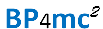Best Practices for meaningful connected computing
PiLOD resultaten - best practices voor betekenisvol verbinden van informatievoorzieningen met Linked Data
- Deze versie:
- http://www.bp4mc2.org/2014-06-06
- Laatste versie:
- http://www.bp4mc2.org
- Vorige versie:
- http://www.bp4mc2.org/2014-06-02
- Auteurs:
- Marco Brattinga, Hans Overbeek, Arjen Santema
- Bijdragen van:
Samenvatting
De afgelopen drie jaar is vanuit het Platform implementatie Linked (Open) Data (PiLOD) onderzoek uitgevoerd en concrete ervaring opgedaan met de mogelijkheden die het internet biedt voor het ontsluiten en uitwisselen van informatie met behulp van ‘linked data’.
Dit heeft geleid tot een schat aan (best) practices rondom de denkwijze, werkwijze en modelleerwijze van semantiek, datamodellen en uitwisselingsstandaarden. Dit document geeft een beschrijving van deze best-practices.
Geheel in stijl met het principe van ‘linked data’, is zoveel mogelijk geprobeerd om dit document te verbinden met andere informatiebronnen die op het internet beschikbaar zijn, zoals wetenschappelijke publicaties, andere best-practices en relevante onderzoeken en standaarden.
Dit document is niet bedoeld als academisch of wetenschappelijk verantwoorde vastlegging van een onderzoeksresultaat. Ook is dit document niet bedoeld als standaard. Het document bevat (best) practices: ervaringen die -in een specifieke context- nuttig bleken.
Status van dit document
Dit document is in ontwikkeling.
Inhoudsopgave
- 1 Inleiding
- 1.1 Aanleiding
- 1.1.1 De waarde van informatie
- 1.1.2 De e-overheid: de waarde van informatie voor de Nederlandse overheid
- 1.1.3 Linked Data
- 1.2 Van 20e eeuw principes naar 21e eeuw principes
- 1.3 BP4MC2: Een bruikbare en in de praktijk bewezen aanpak
- 1.4 Opbouw van dit document
- 2 Denkwijze
- 2.1 De symboliek van communicatie: termen, woorden en URI's
- 2.1.1 Begripsdriehoek
- 2.1.2 Context: spreker en toehoorder
- 2.1.3 URI-term
- 2.1.4 Begrippen in deze sectie
- 2.2 Vorm van communicatie
- 2.2.1 Soorten zinnen naar communicatieve functie
- 2.2.2 HTTP (Hypertext Transfer Protocol)
- 2.2.3 De mededelende zin
- 2.2.4 De URI (Uniform Resource Identifier)
- 2.2.5 De URL (Uniform Resource Location) als vraag
- 2.2.6 Overige URL vragen
- 2.2.7 Begrippen in deze sectie
- 2.3 Betekenis van communicatie
- 2.3.1 Feiten: omstandigheden en gebeurtenissen
- 2.3.2 Relatie tussen de brute werkelijkheid en de institutionele, juridische werkelijkheid
- 2.3.3 Administratieve werkelijkheid
- 2.3.4 Begrippen in deze sectie
- 2.4 Gebruik
- 2.4.1 Begrippen
- 2.4.2 Formalisering in een axiomatisch begrippenstelsel
- 2.4.3 Brute werkelijkheid versus data
- 2.4.4 Context van data
- 2.4.5 Correcties
- 2.4.6 Van begrippen naar (vastlegging van) data
- 2.4.7 Begrippen in deze sectie
- 3 Modelleerwijze
- 3.1 URI Design pattern voor Linked Data
- 3.1.1 No register, no identifier
- 3.1.2 No register, no model
- 3.1.3 Hergebruik zonder register
- 3.1.4 Uitgangspunten
- 3.1.5 URI-patroon
- 3.1.6 URI-patroon: {domain}
- 3.1.7 URI-patroon: {type}
- 3.1.8 URI-patroon: {concept}
- 3.1.9 URI-patroon: {reference}
- 3.1.10 Aanbevelingen voor "private" data
- 3.2 Begripkader
- 3.2.1 Model
- 3.2.2 Definities en klare taal
- 3.2.3 Begrippen
- 3.2.4 Relatie met standaard vocabulaires
- 3.2.5 Grafische representatie
- 3.2.6 Voorbeeld
- 3.3 Gebeurtenissen
- 3.3.1 Model
- 3.3.2 Gebeurtenis
- 3.3.3 Voorbeeld
- 3.4 Datamodel
- 3.4.1 Vertaling begrippenkader naar een relationeel datamodel
- 3.4.2 Metadata
- 3.4.3 Waardelijsten
- 3.4.4 Vertaling van het begrippenkader naar een owl/dl ontologie
- 3.4.5 Grafische representatie
- 3.4.6 Voorbeeld
- 4 Werkwijze
- 4.1 Toepassen URI strategie
- 4.1.1 Bepalen domeinnaam
- 4.1.2 type, concept en referentie toegepast op het begrippenkader
- 4.1.3 type, concept en referentie toegepast op het datamodel
- 4.1.4 type, concept en referentie toegepast op de data
- 4.1.5 Ontwerpoverwegingen
- 4.2 Inventariseren en analyseren van de samenhang
- 4.2.1 Bepalen basis set te definiëren begrippen
- 4.2.2 Bepalen basis set te definiëren gebeurtenissen
- 4.2.3 Toevoegen context
- 4.3 Redigeren, valideren en verifiëren
- 4.3.1 Redigeren: definieren en documenteren begrippen en gebeurtenissen
- 4.3.2 Valideren
- 4.3.3 Verifiëren
- 4.4 Publiceren
- 4.5 Definieren datamodel
- 4.5.1 Beschrijven van een relationeel datamodel
- 4.5.2 Beschrijven van een ontologie
- 5 Ondersteuning
- 5.1 Architectuur
- 5.1.1 Triple store
- 5.1.2 SPARQL endpoint
- 5.1.3 Linked Data API
- 5.1.4 Content negotiation
- 5.1.3 Linked Data grafische representatie
- 5.1.4 Infrastructuur
- 5.2 Voorbeeld
- 5.2.3 Grafisch
- 5.3 Tooling
1 Inleiding
1.1 Aanleiding
1.1.1 De waarde van informatie
In onze maatschappij neemt de waarde van (goede) informatie toe. Algemeen geaccepteerd is het principe dat goede bedrijfsbeslissingen (die ervoor zorgen dat een bedrijf of instellingen haar doelstellingen sneller, beter, goedkoper kan bereiken) afhankelijk zijn van de toegang tot goede informatie.
Het is (nog) niet gebruikelijk om informatie als "asset" (vermogen) op de balans te plaatsen. Sinds 9-11 is een bewustwording op gang gekomen dat informatie van strategische waarde is voor een organisatie, met als gevolg de ontwikkeling van infonomics: het vakgebied dat (bedrijfs)economie en informatie bij elkaar brengt [INFONOMICS].
Infonomics kan bedrijven helpen om te komen tot betere bedrijfsresultaten, door strategische beslissingen te nemen over het beheer en vergaren van (goede) informatie. In "the economics of information management" [ECONIM] worden daarbij de volgende principes neergezet voor het verbeteren van de informatie in een organisatie:
- Verbeter de kwaliteit;
- Verbeter de beschikbaarheid;
- Verbeter het gemak waarmee informatie gebruikt kan worden;
- Innoveer: introduceer nieuwe technologie (zodat data omgezet kan worden in beter bruikbare informatie);
- Voeg nieuwe of (toegang tot) externe databronnen toe
BP4mc2 geeft best practices om bovenstaande voor elkaar te krijgen.
1.1.2 De e-overheid: de waarde van informatie voor de Nederlandse overheid
Een belangrijke doelstelling van de e-overheid is om de overheid transparant te laten zijn, overheidsinformatie te delen en beschikbare informatie te (her)gebruiken. Het kabinet heeft haar ambitie op dit vlak kenbaar gemaakt in het "Actieplan open overheid" [APOO]. In dit licht is in de loop van 2011 in de ‘Aanwijzing voor de regelgeving’ een bepaling opgenomen, die het zoveel mogelijk aansluiten op begrippen en data in basisregistraties voorschrijft [AANW161]. Door het eenmalig verzamelen van data worden de administratieve lasten voor burgers en bedrijven verminderd. Voor de overheid zelf worden kwaliteitsverbeteringen en kostenbesparingen gerealiseerd. Als data meer en beter worden gebruikt, komt er meer terugkoppeling op de kwaliteit en worden minder fouten gemaakt.
1.1.3 Linked Data
Linked data lijkt een bruikbare technologie om (overheids)data direct via het web te publiceren. In het artikel "Een nieuwe wereld, een nieuwe informatie architectuur" [RIJNSANT] beschrijven Ria van Rijn en Arjen Santema wat de potentiële mogelijkheden voor linked data zijn. Nu nog wordt data in het beste geval via webservices, maar vaak ook nog gewoon als databestand tussen organisaties uitgewisseld. Dergelijke oplossingen hebben vaak als kenmerk dat ze als point-solution zijn gerealiseerd en moeilijk op te schalen zijn naar breder gebruik. Een belangrijke reden hiervoor is dat een impliciete context wordt verondersteld waarbinnen de data bruikbaar is, zonder dat deze context met de data wordt meegeleverd.
Door data via het web te publiceren wordt deze in een keer, voor iedereen beschikbaar, vanuit een herkenbare bron gepubliceerd. Linked Data kan inclusief context worden gepubliceerd. Met context wordt de uitleg van de betekenis van data en metadata bedoeld. Metadata zijn bijvoorbeeld de wijze van inwinning, volledigheid, betrouwbaarheid, tijdigheid, en herkomst. Linked Data biedt de mogelijkheid om deze metadata in dezelfde vorm te publiceerd als de data zelf.
1.2 Van 20e eeuw principes naar 21e eeuw principes
In zijn presentatie op het PiLOD congres op 13 november 2013 [LIKNSP] schetst Christophe Guéret treffend de wijze waarop het delen van kennis zich in de afgelopen decennia heeft ontwikkeld door het internet. Tot 1989 waren documenten de gangbare vorm om informatie uit te wisselen. Documenten werden op bulletin boards geplaatst vanwaar men ze kon downloaden. Vervolgens moest men eerst op zoek naar software om dit te kunnen lezen (bijvoorbeeld Wordpad of WordPerfect). Via news groups werden nieuwe documenten en nieuwe versies van documenten bekendgemaakt en welke verwijzingen er waren.
Het web heeft danig verandering gebracht in het kunnen zoeken, vinden en verbinden van informatie. Informatie wordt steeds meer aangeboden als webpagina die door elke browser aan de gebruiker kan worden getoond. Die webpagina wordt gegenereerd door een applicatie die versies beheert en die navigatie naar vele andere gerelateerde informatie geautomatiseerd aanbiedt. Bijvoorbeeld linkjes naar een pagina over de auteur, andere versies van de informatie, andere pagina’s over hetzelfde onderwerp, enzovoort. Elk linkje is een zogenaamde Unique Resource Identifier (URI) waardoor die iedere pagina een duidelijk adres op het internet geeft, waarnaar direct kan worden verwezen zodat informatie steeds nauwkeuriger wordt verbonden.
Maar als het om data gaat, gebeurt vaak nog hetzelfde als dertig jaar geleden met documenten gebeurde. Als je een dataset vindt moet je op zoek naar software om deze in te lezen (meestal een database of spreadsheet programma). Je moet zelf goed bewaken dat je alle updates krijgt om de gereproduceerde dataset synchroon te houden met het origineel. En links naar andere datasets moeten voor iedere reproductie van een dataset opnieuw worden aangebracht. Dit klinkt inderdaad wel een beetje ‘jaren negentig’.
Met vier eenvoudige door Tim Berners Lee aangedragen principes kunnen de bewezen principes voor het internet ook worden toegepast op data [LINKEDDATA]:
- Gebruik URI’s als verwijzing naar "dingen".
- Gebruik http URI’s zodat informatie over deze ‘dingen’ gevonden kan worden via het internet;
- Geef iemand bruikbare informatie terug als iemand een URI opzoekt, volgens de standaarden van het internet;
- Neem links op naar andere URI’s zodat meer (gerelateerde) informatie kan worden gevonden.
Met deze principes worden data gepubliceerd via het web en wordt gebruik gemaakt van web-standaarden. Dit is fundamenteel anders dan het ‘jaren negentig-achtige’ op het web zetten van een databestand en een welgemeend “zoek het verder zelf maar uit!”.
1.3 BP4MC2: Een bruikbare en in de praktijk bewezen aanpak
Vanuit het W3C zijn er standaarden om betekenis vast te leggen en om datamodellen voor linked data te maken. Zo is SKOS [SKOS] (Simple Knowledge Organisation System) een bruikbare, door het W3C vastgestelde standaard voor het definiëren van begrippen en hun samenhang in de vorm van een thesaurus of taxonomie. Voor het definiëren van een ontologie als basis voor een in RDF te representeren datamodel is OWL [OWL] (Web Ontology Language) en in de praktijk OWL/DL (Description Logic), als eenvoudige, maar voor de meeste toepassingen voldoende compleet vocabulair beschikbaar.
Er zijn echter nog weinig beschreven practices waarin wordt beschreven hoe en in welke stappen een ‘old school’ jaren negentig dataset kan worden omgezet naar een structuur die maximaal aansluit bij de moderne web standaarden. Dit boekje is de neerslag van de eerste praktische ervaringen op dit gebied in Nederland. Doel is om te laten zien hoe de Nederlandse URI-strategie in de praktijk kan worden toegepast en hoe data betekenisvol, inclusief context kan worden gemodelleerd en gepubliceerd.
BP4MC2 (in het Engels: Best Practices for Meaningful Connected Computing) is een open methode om vanuit juridische of vakmatige richtlijnen de betekenis, structuur en dynamiek van een registratie te beschrijven. Daarbij wordt gebruik gemaakt van concepten uit de semantiek en de wereld van linked data.
1.4 Opbouw van dit document
BP4MC2 is een open methode, iedereen wordt dan ook uitgenodigd om zijn bijdrage te leveren aan het verbeteren en optimaliseren van BP4MC2. De methode wordt beschreven aan de hand van het raamwerk van Seligman, Wijers en Sol. In dit raamwerk worden 4 aspecten van een mehode onderscheiden. (zie Selligman, P.G. Wijers en H. Sol (1989): Analyzing teh structure of I.S. methodologies, an alternative approach, in:Proceedings of the firts Dutch Conference on information systems en Wijers, G. (1991): Modelling support in information systems development. Proefschrift Technische Universiteit Delft, Thesis [MSISD]
Een methode bestaat uit:
- een denkwijze (way of thinking, ofwel theoretisch kader)
- een representatiewijze (way of modelling, ofwel modelleerwijze)
- een werkwijze (way of working, dit betreft de processen)
- een ondersteuningswijze (way of supporting, ofwel de ondersteunende templates en tooling)
De hoofdstukken 2 t/m 4 beschrijven de methode langs de lijnen van dit raamwerk.
- Hoofdstuk 2 beschrijft de denkwijze achter de ontwikkelde practices. Deze zijn ontleent aan de taalkunde, semiotiek, rechtswetenschap en de architectuur van het internet.
- Hoofdstuk 3 beschrijft de practices om betekenisvol te modelleren. Deze beschrijving valt uiteen in een beschrijving van de gebruikte vocubulaires, richtlijnen voor het modelleren en de wijze waarop deze modellen gerepresenteerd kunnen worden.
- Hoofdstuk 4 beschrijft hoe, in welke stappen en met welke deskundigheid de practices in de praktijk kunnen worden toegepast.
- Hoofdstuk 5 beschrijft de architectuur ten behoeve van betekenisvol modelleren. Daarnaast worden enkele voorbeelden gegeven van concrete implementaties.
2 Denkwijze
Begrip, in de zin van elkaar begrijpen staat centraal bij betekenisvol modelleren. Data bevatten informatie en informatie gaat over de werkelijkheid. De essentie van betekenisvol modelleren is dat het begrijpen van en het communiceren over de werkelijkheid altijd gebeurt met een begrippenkader. Als mensen elkaar begrijpen kunnen ze met elkaar communiceren en raken ze verbonden. Als data in informatiesystemen begrijpelijk zijn kunnen data worden verbonden.
Betekenisvol modelleren gaat dus in twee stappen. Eerst wordt een begrippenkader gemaakt waarmee begrip ontstaat. Dit symboliseren we met een "a"
Vervolgens wordt rond dit begrippenkader de data gemodelleerd. In dezelfde stijl symboliseren we dit met een "@"
Dit hoofdstuk beschrijft de denkwijze vanuit de onderdelen waaruit communicatie is opgebouwd:
- De symboliek van communicatie (hoe drukken we ons uit: termen en woorden versus URI's);
- De vorm van communicatie (zinnen en gesprekken);
- De betekenis van communicatie (waar gaat het over: feiten, gebeurtenissen, werkelijkheden);
- Het gebruik van communicatie.
2.1 De symboliek van communicatie: termen, woorden en URI's
2.1.1 Begripsdriehoek
Een belangrijk aspect van communicatie en informatica is het gebruik van symbolen om te verwijzen naar specifieke objecten. In de communicatie wordt daarbij vaak de ‘triangle of meaning’ aangehaald. Dit model is afkomstig uit de semiotiek en beschrijft hoe symbolen (of ‘termen’) gebruikt worden door een spreker om te verwijzen naar een specifiek ‘ding’.
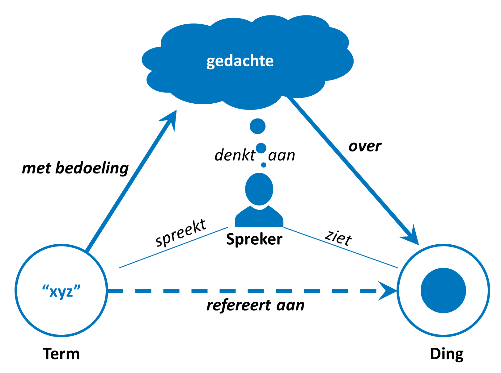De derde hoek van de driehoek bestaat uit de gedachte die de spreker had van dit ‘ding’ op het moment dat hij hierover sprak. De spreker heeft het feitelijk niet over het echte ‘ding’, maar over zijn gedachte van dit "ding". De triangle of meaning is in 1923 gepubliceerd Ogden and Richards. Hoewel vaak wordt gerefereerd aan de ‘Ogden/Richards triangle’ is het idee zelf al in 1810 uitgewerkt door Bernard Bolzano (Beiträge zu einer begründeteren Darstellung der Mathematik). De echte wortels gaan nog verder terug, namelijk tot Aristoteles Peri Hermeneias (De Interpretatione, tweede boek van de Organon).
2.1.2 Context: spreker en toehoorder
Een belangrijk aspect van de begripsdriehoek is het idee dat een term verwijst naar een ding zoals de spreker dit bedoelt. De toehoorder zal bij het horen van de mededeling van de spreker altijd zijn eigen gedachte van de term hebben, en dus mogelijk een ander ‘ding’ of ander aspect van dit ‘ding’ voor ogen hebben.
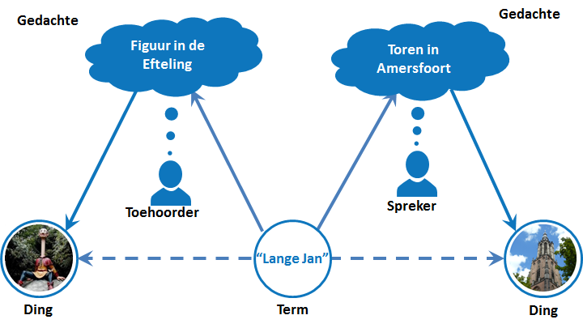Bovenstaand figuur geeft een voorbeeld waar een dergelijke spraakverwarring is afgebeeld. De spreker gebruikt de term ‘Lange Jan’ en heeft daarbij zijn eigen gedachte over een specifiek gebouw (de Onze Lieve Vrouwetoren in Amersfoort, Kadastraal middelpunt van Nederland en in de volksmond ook wel de "lange Jan" genoemd). De toehoorder zit met zijn gedachten ergens anders (namelijk: in de efteling), en veronderstelt dat de spreker het over iets heel anders heeft dan een gebouw.
Begrip ontstaat als er voldoende overlap is in de gedachten die sprekers en toehoorders hebben bij eenzelfde term. Dit idee is voor het eerst uitgewerkt door Peirce, en de consequenties voor de ICT verder door Sowa in Ontology, Metadata and Semiotics [ONTOMETA]. Context is daarbij cruciaal: verschillende contexten maken dat dezelfde termen naar andere begrippen verwijzen. Dit verschil in context wordt mooi geillustreerd in het sesamstraat tekenfilmpje over "grote dingen" [SS-TAAT].
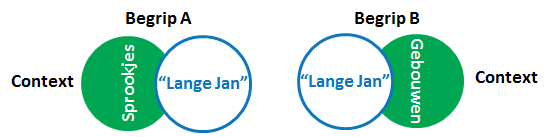Het vervelende aan ‘natuurlijke’ taal is echter in geschreven taal aan de term niet zichtbaar is wie de spreker is. Bij gesproken taal is dit anders: daar is duidelijk wie de woorden uit, dus ook wie ‘bezitter’ is van de gedachte. Zo kan een gesprek ontstaan, waarbij de toehoorder aan de ‘bezitter’ vragen stelt over de gedachte, om zo beter te begrijpen wat de spreker bedoeld. Zie bijvoorbeeld het sesamstraat tekenfilmpje "guess who I met today"[SS-GWIMT]
In "Through the looking-glass" van Lewis Caroll wordt deze innige relatie tussen de betekenis van een term zijn spreker verwoord in het gesprek tussen Alice en Humpty-Dumpty:
"I don't know what you mean by 'glory'", Alice said.
Humpty Dumpty smiled contemptuously. "Of course you don't. Till I tell you. I meant 'there's a nice knock-down argument for you!'"
"But 'glory' doesn't mean 'a nice knock-down argument'," Alice objected.
"When I use a word," Humpty Dumpty said in rather a scornful tone. "It means just what I choose it to mean - neither more or less."
"The question is," said Alice, "whether you can make words mean so many different things."
"The question is," said Humpty Dumpty, "which is to be master - that's all."
Hier stelt Humpty Dumpty dat hijzelf, en alleen hijzelf kan bepalen wat een woord betekent. Strikt genomen heeft hij gelijk. Maal als men betekenisvol wil communiceren en daarmee ook betekenisvol modelleren, dan is enige duidelijkheid nodig wat ‘we’ er mee bedoelen. Deze duidelijkheid kan worden bereikt door het definiëren van begrippen.
Het belang van het geven van betekenis aan woorden wordt vooral duidelijk als met woorden iets betekenisvol wordt afgebakend. Een voorbeeld uit de rechtspraak (waarbij bovendien de woorden van Lewis Caroll worden geciteerd) is de zaak Liversidge versus Anderson uit 1942 in Engeland [LIVAN], waarbij de vraag op tafel lag of de woorden van een wet in verschillende situaties anders uitgelegd mochten worden, ofwel: wie bepaald in ultimo wat de betekenis is van de woorden uit de wet? Een voorbeeld uit Nederland is het elektriciteitsarrest [EARREST], waarin een Haagse tandarts beschuldigd wordt van diefstal van elektriciteit door de meter te blokkeren met een breinaald. In cassatie verweert de tandarts zich met de stelling dat elektriciteit niet als "enig goed" valt te kwalificeren, zodat niet aan de delictsomschrijving van artikel 310 Sr (diefstal) is voldaan.
Om betekenis te kunnen geven aan symbolen, is het van belang om de afspraken te kennen, of ten minste een verwijzing te hebben naar een ander symbool waar de afspraak wel van bekend is. Een voorbeeld van dit laatste is de Rosetta Stone [ROSETTA].
Humpty Dumpty, Liversedge versus Anderson en het electriciteitsarrest zijn voorbeelden van de noodzaak van afspraken over de manier waarop waarnemingen dingen en gebeurtenissen in de brute werkelijkheid worden vertaald naar een representatie van deze dingen en gebeurtenissen. Daardoor kan die representatie worden geïnterpreteerd, ofwel worden terugvertaald naar de werkelijkheid zoals iemand zich die voorstelt. Daarmee kan iemand zich een beeld vormen van de werkelijkheid, ook al heeft hij die niet zelf waargenomen. Dit beeld is in wezen een administratie van de werkelijkheid, ofwel een administratieve werkelijkheid.
Tegenwoordig wordt de meeste informatie vastgelegd in digitale informatiesystemen. Conceptueel verschilt dit niet wezenlijk van handgeschreven vastlegging. Nieuw is wel dat digitale informatiesystemen hun informatie direct met elkaar kunnen uitwisselen zonder menselijke tussenkomst. Bij uitwisseling tussen traditionele informatiesystemen is er altijd iemand die het bronsysteem leest, de informatie begrijpt en vervolgens de informatie in het doelsysteem wijzigt. Afwijkingen tussen de modellen van de twee systemen worden daarbij door de persoon in kwestie ‘vertaald’ van het ene naar het andere model.
Bij digitale uitwisseling controleert niemand of de symbolen die in het bronsysteem zijn gebruikt wel hetzelfde betekenen als in het doelsysteem. Niemand kan bij een afwijking in betekenis ingrijpen om te zorgen dat de informatie ‘correct’ wordt ontvangen in het ontvangende systeem. ‘Correct’ wil hier zeggen dat het ontvangende systeem de symbolen naar dezelfde werkelijkheid terugvertaalt als dat het bronsysteem dat zou doen. Deze controle en eventuele vertaling moet dus voor systemen herkenbaar worden vastgelegd om te voorkomen dat verkeerde conclusies worden getrokken.
2.1.3 URI-term
We kunnen het model van de begripsdriehoek ook toepassen op een informatiesysteem. De term in de driehoek correspondeert dan met een identificatie in het informatiesysteem, de gedachte correspondeert met een onderdeel uit het conceptuele model van het systeem en het ding blijft, net als in natuurlijke taal, het "echte" ding: het is geen onderdeel van het systeem.
De eerste twee principes van Linked Data, zoals genoemd in Hoofdstuk 1, geven een elegante manier om identificaties zo te kiezen dat problemen met synoniemen en homoniemen zo veel mogelijk worden voorkomen. Bovendien kunnen de identificaties verwijzen naar hun "eigenaar", wat de mogelijkheid geeft om meer informatie te verzamelen en zo een beter begrip te krijgen.
- Gebruik URIs als namen voor dingen.
URI staat voor “Uniform Resource Identifier” een URI is dus iets waarmee je op een eenduidige manier naar iets verwijst. De URI correspondeert met de term uit de begripsdriehoek. De resource correspondeert met het begrip van het ding zoals het informatiesysteem (hier de spreker) dat heeft van het ding in de werkelijkheid. Merk op dat TBL de onderste zijde van de driehoek verwoordt: De URI refereert aan een ding. - Gebruik http URIs zodat mensen die namen kunnen opzoeken.
HTTP URIs hebben de vorm van een internetadres. Het zijn URLs en dus kun je ze ‘activeren’. Met een URL kun je informatie ophalen die op een server beschikbaar wordt gesteld. Bovendien is duidelijk van wie die informatie afkomstig is: van de eigenaar van het internetdomein van de URI.
Merk op dat we in dit plaatje expliciet niet spreken over de "BAG gedachte van een pand". Informatiesystemen zijn deterministische apparaten die in onze ogen geen gedachten hebben zoals mensen deze hebben. Daarom spreker wij liever van een "(conceptueel) model". Dit wil overigens nog niet zeggen dat dit model goed beschreven is! Een slecht gedocumenteerd informatiesysteem kan net zo ondoorgrondelijk zijn als de gedachten van een mens!
2.1.4 Begrippen in deze sectie
| 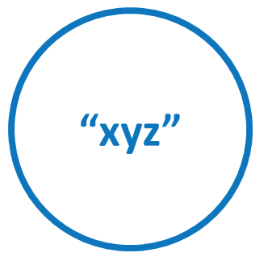 |
Een term is een aaneenschakeling van één of meerdere woorden. |
|
Een ding is iets in een werkelijkheid: een object, mens, machine, etc. |
|
| 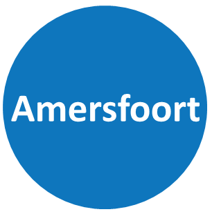 |
Een naam is een term die gebruikt wordt om te verwijzen naar een ding. |
|
Een actor is een mens of IT systeem: iemand of iets dat een communicatieve handeling kan uitvoeren. |
|
| 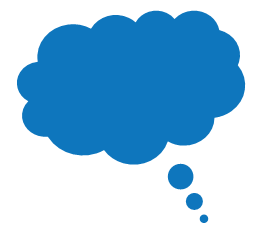 |
Een gedachte is het denkbeeld dat een mens heeft in een bepaalde context over een ding. |
| 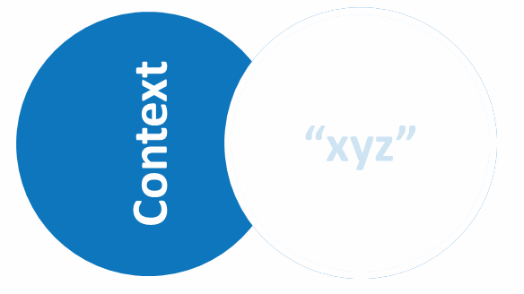 |
Een context is een begrip waarbinnen andere begrippen begrepen kunnen worden |
| 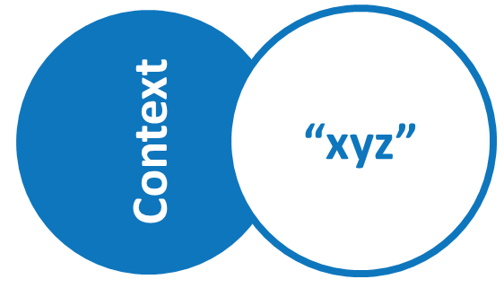 |
Een begrip is de overeengekomen betekenis van een term in een bepaalde context |
| 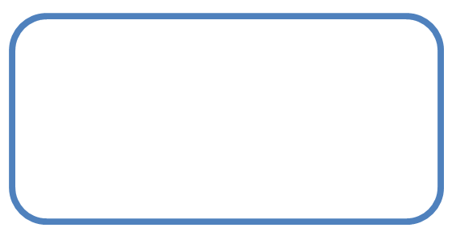 |
Een model is een vereenvoudigde representatie van een ding |
2.2 Vorm van communicatie
Communicatie van natuurlijke taal vindt plaats volgens een model dat we de grammatica van een taal noemen. Eenvoudige uitspraken hebben de vorm [onderwerp] – [gezegde] – [lijdend voorwerp]. Bijvoorbeeld in de zin "Paul kent John" is "Paul" het onderwerp, "kent" het gezegde en "John" het lijdend voorwerp. Linked data is gebaseerd op het uitgangspunt dat we ook met data dergelijke basale uitspraken kunnen doen. Deze uitspraken volgen een grammatica die erg veel lijkt op die van natuurlijke taal. Een linked data uitspraak heeft de vorm van een triple: [subject] – [predicate] – [object].
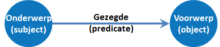Met een triple wordt in feite een ‘korte zin’ uitgedrukt (zie ook "wat is een zin", Algemene Nederlandse Spraakkunst [ANS-ZIN]). Een triple is een uitspraak die bestaat uit drie delen, namelijk ‘subject’, ‘predicate’ en ‘object’, in het Nederlands onderwerp, gezegde en (leidend) voorwerp. Een ‘object’ kan weer een ‘subject’ zijn in een volgende uitspraak, waardoor een netwerk van samenhangende dingen en uitspraken ontstaat. Grafisch wordt een triple vaak afgebeeld als een gerichte graaf: twee bolletjes (voorstelling van subject en object) die met elkaar verbonden zijn met een pijl die het predicate voorstelt. Als het object zelf niet gebruikt worden worden om verder door te verwijzen (omdat het geen URI is, maar een vaste waarde, een literal [LITERAL]), dan wordt vaak in plaats van een bolletje een rechthoek gebruikt.
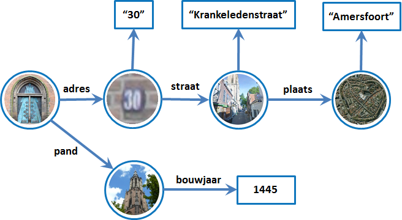Bovenstaand voorbeeld toont plaatjes in plaats van URI's voor de (menselijke) leesbaarheid. Dit plaatje zou er in Linked Data met echte URI's als volgt uitzien. Voor de leesbaarheid zijn deze URI's met prefixen.
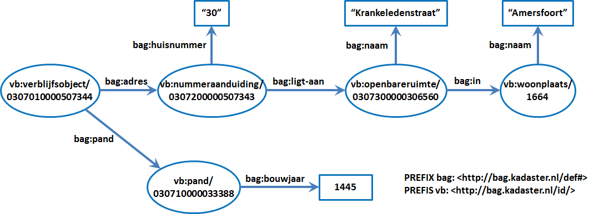Aangezien alleen ruimte is voor een onderwerp, gezegde en (lijdend) voorwerp, is er in de korte zin geen mogelijkheid om ook de context uit te drukken waarbinnen een mededeling als ‘waar’ moet worden beschouwd. Hiervoor kent linked data de mogelijkheid van een "named graph" (in goed Nederlands de "benoemde graaf"). Een set samenhangende triples vormt samen een ‘named graph’ die zelf ook weer een URI heeft, en de context van deze triples geeft. Via de URI van de "graph" kan ook de herkomst van de mededeling worden vastgelegd: wie deed de mededeling, wanneer en vanuit welke gedachte.
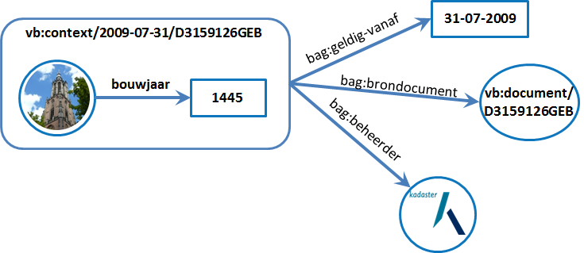2.2.1 Soorten zinnen naar communicatieve functie
Natuurlijke taal kent drie soorten zinnen naar communicatieve functie [ANS]:
- Mededelende zinnen: een uiting van een mededeling, dat wil zeggen: een mededeling;
- Vragende zinnen: een verzoek om een mededeling, dat wil zeggen: een vraag;
- Bevelende zinnen: een verzoek om een actie, dat wil zeggen: een bevel.
De ANS spreekt nog van een vierde soort zin: de uitroepende zin. Dit is een zin die een emotie uitdrukt. Zo’n zin eindigt meestal op een uitroepteken. Daarbij wordt vermeld dat een dergelijke uitroepende zin in communicatieve functie weer een mededeling, vraag of bevel kan bevatten. Daarom beschouwen we de uitroepende zin hierna niet als een afzonderlijke soort zin.
Voor vragende zinnen is het gebruikelijk om een vraagteken (‘?’) aan het einde van de zin te plaatsen. Voor mededelende zinnen is het gebruikelijk om een punt (‘.’) aan het einde van de zin te plaatsen. Voor bevelende zinnen bestaat geen eenduidigheid. Verderop gebruiken we hiervoor een uitroepteken (‘!’).
Voorbeelden van deze drie soorten zinnen zijn:
- "Jan is geboren op 17 maart." (mededeling)
- "Kun je iets vertellen over Jan?" (vraag)
- "Vergeet alles wat je over Jan kunt vertellen!" (bevel)
2.2.2 HTTP (Hypertext Transfer Protocol)
Het world wide web, dat toegankelijk is via de browser en waar ook Linked Data op is gebaseerd, volgt het hypertext transfer protocol (http). Dit protocol [HTTP][PROTOCOLS] is vergelijkbaar met hoe een gesprek wordt gevoerd tussen twee mensen.
Een http-request komt overeen met:
- Een vragende zin, als sprake is van een verzoek om een mededeling, zonder dat een andere actie (zoals: "sla dit op"). De meest gebruikte methode in het geval van een bevelende zin is "GET"
- Een bevelende zin, als sprake is van een verzoek om actie (zoals: "sla dit op"). De meest gebruikte methode in het geval van een bevelende zin is "PUT", "POST" en "DELETE". Het gebruik van "GET" voor een bevelende zin druist in tegen de specificaties van het http-protocol.
Een http-response komt overeen met:
- Een mededelende zin, als het antwoord op een vragende zin;
- Een mededelende zin, als het antwoord op een bevelende zin. In een dergelijk geval zegt de mededeling iets over de belofte of het resultaat van de verzochte actie).
In relatie tot de publicatie en het raadplegen van Linked Data gaat het om vragende en mededelende zinnen en de ‘GET’ http-request methode. Hiervoor geldt:
- Een vragende zin komt overeen met de URL die wordt ingetypt in de browser;
- Een mededelende zin komt overeen met de webpagina die vervolgens wordt getoond in de browser.
2.2.3 De mededelende zin
Een eenvoudige, enkelvoudige mededelende zin heeft de vorm:
- Onderwerp (subject) - Gezegde (predikaat) - Voorwerp (object)
Deze vorm is identiek aan de opzet van een triple in Linked Data:
-
<subject> <predicate> <object>
Zo is de zin: "Jan kent Piet" gelijk aan de Linked Data representatie in Turtle-syntax [TURTLE]:
ex:persoon/Jan ex:predikaat/kent ex:persoon/Piet.
In een triple wordt subject en predicate altijd afgebeeld op een URI. Een object mag zowel afgebeeld zijn op een URI als op een literal. Een literal is een stukje tekst, een datum, of een nummer.
Dit betekent dat in een mededelende zin veel woorden (beter gezegd: termen) vervangen worden door identificerende elementen. Dit helpt om specifieke, formele uitspraken te doen: het wordt gemakkelijker om te begrijpen wat wordt bedoeld, er is geen misverstand. Vaak wordt hier de term ‘disambiguation’ gebruikt.
De volgende voorbeelden laten dit zien:
- Marco zei tegen Marco: "Heb je Marco al gesproken?"
- Marco Polo zei tegen Marco Janssen: "Heb je Marco Janssen al gesproken?"
- De persoon met BSN 1234 zei tegen de persoon met BSN 4321: "Heb je de persoon met BSN 8743 al gesproken?"
De eerste zin kent de minst specifieke aanduiding voor "Marco". Dit maakt de zin lastig te begrijpen. Immers: over welke Marco hebben we het? De tweede zin kent al een iets specifiekere aanduiding voor "Marco". Hij klinkt een stuk formeler, en leest minder prettig, maar is wel beter te begrijpen. De derde zin kent een zeer specifieke aanduiding. De derde zin is volstrekt duidelijk en ondubbelzinnig, maar zeer onprettig om te lezen.
2.2.4 De URI (Uniform Resource Identifier)
In een Linked Data zin worden het onderwerp, gezegde en soms ook het (lijdend) voorwerp uitgedrukt met URI's. De URI is dus eigenlijk de naam van het onderwerp, gezegde of (lijdend) voorwerp. Een URI kan verschillende vormen hebben. Zie hiervoor de URI specificaties [RFC3986], of de meer leesbare wikipedia beschrijving [URI].
Voorbeelden van correcte URI-namen van ‘Marco’, ‘Marco Polo’ en ‘BSN 1234’ zijn:
-
urn:term:Marco -
http://bp4mc2.org/voorbeeld/id/persoon/Marco -
urn:uuid:1234 -
http://bp4mc2.org/voorbeeld/id/persoon/1234
De oneven URI’s zijn URN’s. Dit zijn gewoon namen, zonder dat hiermee ook een (internet) locatie wordt gegeven (URN = Uniform Resource Name). De even URI-namen zijn URL’s (URL = Uniform Resource Location), dat wil zeggen namen die gelijktijdig ook een (internet) locatie aanduiden.
Aangezien een internetlocatie overeen komt met de URL wordt ingetypt in de browser, is een URL hiermee niet alleen een naam, maar gelijktijdig ook een vragende zin!
- Een
URLvertegenwoordigt zowel een naam (identificatie) als een vraag - Een
URNvertegenwoordigt slechts een naam (identificatie)
2.2.5 De URL (Uniform Resource Location) als vraag
Een URL kan dus zowel een vraag als de naam van ‘iets’ zijn. Het is duidelijk wat wordt bedoeld met de URL als naam voor ‘iets’, namelijk precies dit ‘iets’:
- De url
http://bp4mc2.org/voorbeeld/id/persoon/1234is hier de naam (of identificatie) van een persoon met de volledige naam ‘Marco Polo’, voornaam ‘Marco’ en BSN ‘1234’.
Ook is duidelijk dat een URL nooit een mededelende zin kan zijn. Zo'n zin is immers geen triple. Hij bevat wel een onderwerp, maar geen gezegde of leidend voorwerp. In onderstaand voorbeeld is de eerste zin geen linked data zin, de tweede wel.
<http://bp4mc2.org/voorbeeld/id/persoon/1234>.
<http://bp4mc2.org/voorbeeld/id/persoon/1234> <http://bp4mc2.org/voorbeeld/id/predikaat/sprak-met> <http://bp4mc2.org/voorbeeld/id/persoon/8743>.
In de wereld van Linked Data kan een URL ook worden gebruikt als vraag. Het derde Linked Data principe stelt: ‘When someone looks up a URI, provide useful information’ [LINKEDDATA])
In het voorbeeld kan dit het volgende gesprek opleveren:
- Vraag: "De persoon met BSN 1234?"
- Antwoord: "De persoon met BSN 1234 heet 'Marco Polo', we noemen hem vaak 'Marco', zijn BSN is 1234 en hij sprak met de persoon met BSN 8743".
Of in Linked Data (Turtle syntax):
http-request:
http://bp4mc2.org/voorbeeld/id/persoon/1234>
http-response:
<http://bp4mc2.org/voorbeeld/id/persoon/1234>
- <http://bp4mc2.org/voorbeeld/id/predikaat/Naam> "Marco Polo";
- <http://bp4mc2.org/voorbeeld/id/predikaat/Roepnaam> "Marco";
- <http://bp4mc2.org/voorbeeld/id/predikaat/BSN> 1234;
- <http://bp4mc2.org/voorbeeld/id/predikaat/sprak-met> http://bp4mc2.org/voorbeeld/id/persoon/8743>.
2.2.6 Overige URL vragen
In de voorgaande sectie hebben we de URL besproken die zowel een "Naam" was als een "Vraag". Er zijn echter veel meer vragen denkbaar, en ook veel meer URL's.
Zo willen we onderscheid maken tussen de URL-Naam en de URL-Vraag. Elke URL-Vraag is een URL die geen URL-Naam is.
Om in de vormgeving een URL-Naam te kunnen onderscheiden van een URL-Vraag stellen we voor om in de URL een vraagteken op te nemen, gevolgd door aanvullende informatie met betrekking tot de vraag, dus bijvoorbeeld:
http://bp4mc2.org/voorbeeld/query/kun-je-iets_vertellen?over=personen&voornaam=Marco
Deze URL-Vraag komt overeen met de zin in natuurlijk taal:
- Kun je iets vertellen over personen met voornaam "Marco"?
Het antwoord op deze vraag zou kunnen zijn: (waarbij de overeenkomstige http-response codes [RFC2616] staan benoemd):
- http-response 200: "Ja, ik ken 1 persoon, die heet Marco Polo, we noemen hem vaak 'Marco', zijn BSN..."
- http-response 304: "Dat heb ik je al verteld"
- http-response 400: "Ik snap je vraag niet"
- http-response 401: "Dat mag ik je niet vertellen"
- http-response 402: "Alleen als je me er voor betaald hebt"
- http-response 403: "Dat mag ik niemand vertellen"
- http-response 404: "Nee, ik ken geen personen die 'Marco' heten"
Onderstaande tabel geeft een totaaloverzicht van URN's, URL's en het gebruik
| Voorbeeld | Naam/Id | Vraag | |||
|---|---|---|---|---|---|
| URI | URN |
urn:uuid:1234
|
Ja | Nee | |
| URL | URL-Naam |
http://bp4mc2.org/voorbeeld/id/persoon/1234
|
Ja | Ja | |
| URL-Vraag |
http://bp4mc2.org/voorbeeld/query/vertel-iets-over?wie=persoon&voornaam=Marco
|
Nee | Ja | ||
2.2.7 Begrippen in deze sectie
| 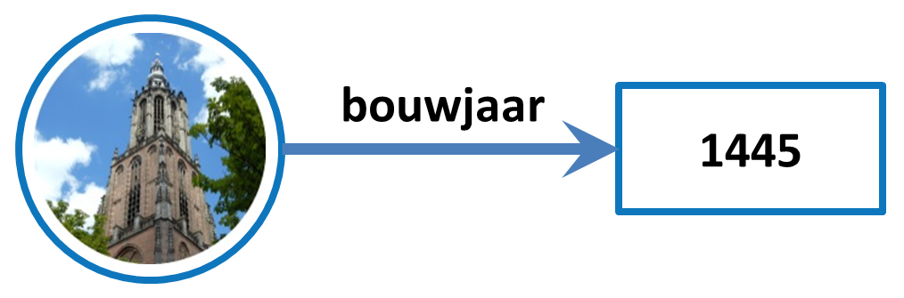 |
Een triple is de combinatie van "onderwerp", "gezegde" en "(lijdend) voorwerp": [subject, predicate, object] |
| 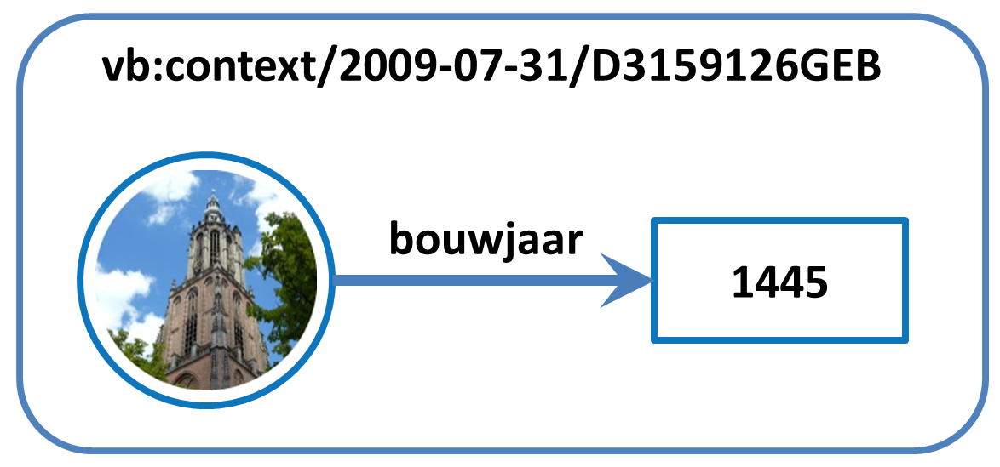 |
Een graph is een verzameling van triples |
2.3 Betekenis van communicatie
2.3.1 Feiten: omstandigheden en gebeurtenissen
De werkelijkheid kent ‘feiten’. Een feit is een gebeurtenis of omstandigheid waarvan de werkelijkheid vaststaat. Het tijdsaspect is van belang bij het beschouwen van een feit: de werkelijkheid van een omstandigheid kan vaststaan op één moment in tijd, maar op een ander moment in tijd juist zijn verdwenen.
Gebeurtenissen zijn juist nooit op een stilstaand moment te aanschouwen. Een gebeurtenis stelt feitelijk voor dat de ene omstandigheid verandert in een andere omstandigheid. Wil een gebeurtenis een feit zijn, dan moet de werkelijkheid van beide omstandigheden vaststaan, maar bovendien moet vaststaan dat er een ‘regel’ is die feitelijk (dus waarvan de werkelijkheid ook vaststaat) veronderstelt dat omstandigheid A wetmatig resulteert in omstandigheid B. Zie voor een uitleg van wat een regel is: defining business rules – what are the really [RULES].In de brute werkelijkheid zijn dit de natuurwetten. Zo valt een appel van een boom als de zwaartekracht die op deze appel wordt uitgeoefend groter is dan de sterkte van de verbinding tussen de appel en de tak waaraan hij hangt.
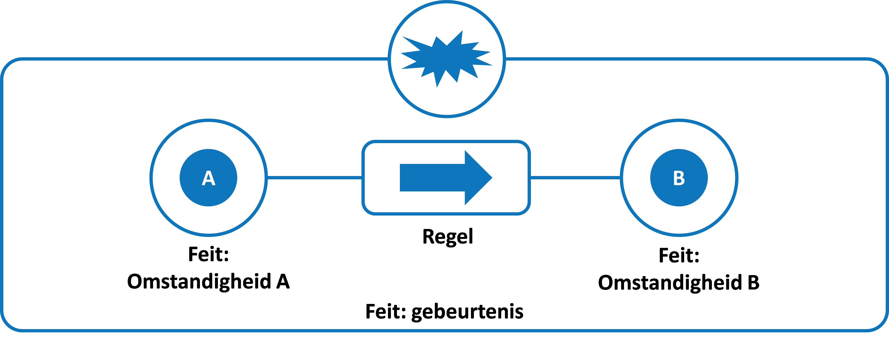De definitie van een feit kent een open eind: wat staat als werkelijkheid vast? Van enkele zaken zal iedereen veronderstellen dat deze ‘vaststaan’: weinig mensen zullen ontkennen dat een brug over een rivier waarover hij loopt ‘bestaat’: zonder de brug zou je immers vallen (een natuurwet). Andere aspecten die wij mensen als de ‘vaststaande werkelijkheid’ beschouwen zijn echter niet natuurlijk en hebben te maken met sociale afspraken: dat er zoiets bestaat als ‘Nederland’ is een afspraak waar de meeste mensen zich aan houden, dus daarmee is ‘Nederland’ (op dit moment) een feit. Maar in 1500 waren er nog maar weinig mensen die ‘Nederland’ als feit zouden erkennen.
Dit laatstgenoemde feit is een voorbeeld van een institutioneel feit. Een institutioneel feit is een feit waarvan de werkelijkheid zijn grondslag heeft in sociale instituties, in dit geval internationale afspraken over soevereine staten (‘Statische en dynamische rechtsfeiten’, prof. dr. J.C. Hage, Universiteit Maastricht).
De wereld van het recht is onderdeel van de sociale werkelijkheid. We noemen dit de juridische werkelijkheid. Deze juridische werkelijkheid bestaat uit rechtsfeiten. Zo ontstaat een onderscheid tussen de brute werkelijkheid, zoals wij die in het dagelijks leven waarnemen, en de juridische werkelijkheid, waarin rechtsregels centraal staan.
2.3.2 Relatie tussen de brute werkelijkheid en de institutionele, juridische werkelijkheid
Alles wat de overheid, waartoe ook uitvoeringsorganisaties als het Kadaster en de Kamer van Koophandel behoren, doet, wordt vastgelegd in een zogenaamd wettelijk kader. De wet omschrijft de begrippen die relevant zijn binnen het toepassingsgebied van de betreffende wet. Ook omschrijft de wet wat in welke gevallen mag of juist niet mag met de dingen die met die begrippen worden aangeduid.
Om begrip van de wet te krijgen, is het van belang om te begrijpen dat regelgeving gelaagd is en afhankelijkheden tussen regelingen de betekenis van een begrip in de wet kan beinvloeden.
De regelgeving kent hiervoor de volgende vier principes:
- Lex specialis - specifieke bepalingen gaan voor algemene bepalingen.
- Lex superior - hogere wetgeving geeft kaders voor lagere wetgeving.
- Lex posterior - jongere wetgeving gaat voor oudere wetgeving.
- Jurisprudentie - een uitspraak van een rechter in een concrete zaak kan invulling geven aan de interpretatie van de wetgeving.
Volgens de paradigma's in de rechtsinformatica (zie o.a. Travis D. Breaux : Legal Requirements Acquisition for the Specification of Legally Compliant Information Systems,.Ph. D. Thesis, North Carolina State University, 2009 en R. van Kralingen : A Conceptual Frame-based Ontology for the Law, Proceedings of the First International Workshop on Legal Ontologies, 1997) is de wet opgebouwd uit:
- Begrippen die de dingen in de werkelijkheid aanduiden waar de betreffende wet betrekking op heeft.
- Gebeurtenissen of rechtshandelingen die met betrekking tot de dingen die met deze begrippen worden aangeduid kunnen plaatsvinden.
- De regels waaronder deze rechtshandelingen mogen worden uitgevoerd.
Bovenstaand figuur laat de dynamiek zien waarlangs rechtsgevolgen ontstaan door gebeurtenissen in de "brute" werkelijkheid:
- Een institutioneel feit heeft altijd een aanleiding in de ‘brute’ werkelijkheid. Voorbeelden zijn een geboorte die aanleiding is voor het opstellen van een geboorteakte, de oprichting van een organisatie die aanleiding is voor het opstellen van een oprichtingsakte en de levering van een huis die aanleiding is voor het opstellen van een leveringsakte.
- Zo’n feit heeft altijd een rechtsgevolg, dat wil zeggen het leidt tot een nieuw institutioneel feit. Na de verwerking van een geboorteakte in het bevolkingsarchief bestaat een kind juridisch, na de verwerking van een oprichtingsakte door de Kamer van Koophandel kan een organisatie rechtshandelingen uitvoeren en na de levering van een huis is iemand als eigenaar bekend bij het Kadaster.
- Aanleiding, voorwaarde en eindsituatie kunnen worden beschreven in de vorm van regels. Aanleiding en voorwaarde vormen de "preconditie". De aanleiding geeft aan "wanneer" de gebeurtenis optreedt (wat de "trigger" is), de voorwaarde geeft aan of de gebeurtenis ook mag optreden. De eindsituatie vormt de postconditie: de beschrijving van de situatie die geldt na afloop van de gebeurtenis.
2.3.3 Administratieve werkelijkheid
De institutionele (en daarmee ook de juridische) werkelijkheid is niet waar te nemen. Het is als een mondeling afspraak: achteraf kun je alleen nog via het geheugen van getuigen achterhalen wat de institutionele feiten zouden moeten zijn.
Registreren van juridische feiten in een administratie is dan ook noodzakelijk voor een goede verstandhouding tussen mensen, en in het bijzonder: voor een goede rechtsorde.
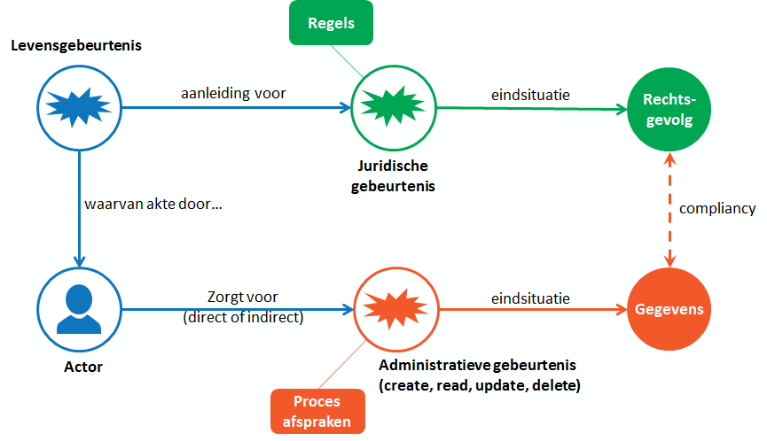Bovenstaand figuur laat zien hoe dit proces in zijn werk gaat:
- Een bepaalde levensgebeurtenis heeft, volgens de institutionele afspraken, rechtsgevolgen.
- Om deze rechtsgevolgen te kunnen registreren, zal een actor (die daartoe in deze specifieke situatie bevoegd is, zoals bijvoorbeeld een notaris) de levensgebeurtenis registreren ("waarvan akte").
- De actor zorgt (direct of indirect) voor het opvoeren van de gegevens met betrekking tot de levensgebeurtenis. Dit opvoeren is feitelijk ook weer een gebeurtenis, nu in de administratie.
- Er is sprake van compliancy als de geregistreerde gegevens overeen komen met de rechtsgevolgen.
Op het niveau van de regels is er sprake van compliancy als de procesafspraken leiden tot gegevensregistratie die overeen komen met de juridische regels.
2.3.4 Begrippen in deze sectie
|
Een feit is een gebeurtenis of omstandigheid waarvan de werkelijkheid vaststaat. |
|

|
Een natuurlijk feit is een feit dat werkelijkheid is in de natuurlijke werkelijkheid. Bron: "The Construction of social reality", John Searle, 1995; http://www.angelfire.com/md2/timewarp/searle.html (Annotaties t.a.v. John Searle) Toelichting |

|
Een institutioneel feit is een feit dat werkelijkheid is conform een stelsel van afspraken (instituut). Bron: http://www.jaaphage.nl/Institutionele%20rechtstheorieen.pdf |
|
Een gegeven is een administratief feit dat als zodanig is geregistreerd in een informatiesysteem. Toelichting |
|
| 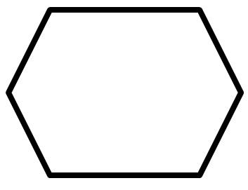 |
De werkelijkheid is datgene dat iemand voor waar aanneemt. |

|
De natuurlijke werkelijkheid is de werkelijkheid waarin wij leven, waarin natuurwetten gelden |

|
Een administratieve werkelijkheid is een werkelijkheid zoals in een IT systeem |

|
Een institutionele werkelijkheid is een werkelijkheid volgens algemeen aanvaarde afspraken |

|
Een juridische werkelijkheid is een institutionele werkelijkheid waarin de wet- en regelgeving geldt |
2.4 Gebruik
Soms wordt de werkelijkheid zelf vastgelegd om deze veilig te stellen, zodat die werkelijkheid op een later tijdstip, door onszelf of door anderen, opnieuw opgeroepen of gereconstrueerd kan worden. Dit gebeurt bijvoorbeeld bij het verzamelen van vlinders of postzegels, of van bewijsstukken bij een rechtszaak. De veilig gestelde objecten kunnen, mits goed bewaard, later aantonen hoe de werkelijkheid was. Maar er gaat altijd informatie verloren. De vlinder wordt gedood en opgeprikt, de postzegel wordt van een envelop gehaald en wie garandeert dat het pistool na de moord niet door een ander is aangeraakt?
Vaak is het onmogelijk om de werkelijkheid zelf vast te leggen. De wereld draait door en de context van tijd en plaats is lastig te vangen. Het is meestal praktischer om een representatie van de werkelijkheid vast te leggen. Dit kan in een realistische representatie zoals een afbeelding, een foto, een film of een geluidsopname. Maar meestal wordt informatie vastgelegd in symbolen of in tekst. Meer abstracte begrippen zoals prijs, gewicht en productiedatum kunnen alleen maar op die manier worden vastgelegd. En tijd en ruimte zijn een uitdaging op zich.
2.4.1 Begrippen
In het voorgaande hoofdstuk hebben we het over concrete zaken gehad: een geboorte, een gebouw, een registratie van gegevens.
Om de betekenis van deze zaken te kunnen beschrijven, is het noodzakelijk om een abstractie te introduceren: de abstractie van "begrippen".
Een "begrip" geeft de betekenis van een term in een specifieke context. Een "begrip" heeft geen betrekking op een concrete zaak, maar om een abstractie hiervan.
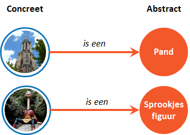Een begrip wordt aangeduid met een term. Ook hier kunnen we de begripsdriehoek gebruiken. Alleen gaat het in dit geval niet om een gedachte, maar om een daadwerkelijke afspraak over wat het begrip zou moeten betekenen. Dit drukken we uit met een "a". Onderstaand figuur geeft de driehoek weer voor het begrip "Pand" uit de BAG.
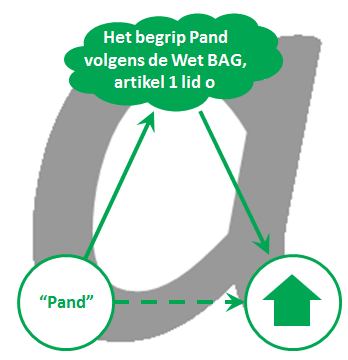Het "ding" aan de rechterkant is in dit geval geen concreet "ding", maar een abstractie: een "pand" zoals bedoeld in de BAG. Het wolkje bovenin betreft de afspraak over de betekenis van een "Pand". Dit sectie beschrijft hoe een dergelijke afspraak gerepresenteerd kan worden.
2.4.2 Formalisering in een axiomatisch begrippenstelsel
Een begrip is te identificeren door een term te verbinden met een context. Hiermee is duidelijk wanneer twee begrippen dezelfde betekenis hebben (term+context is gelijk), of wanneer twee begrippen van elkaar verschillen (term+context is anders)
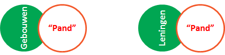Dit geeft nog geen duiding aan de betekenis van het begrip. Daarvoor is het noodzakelijk om begrippen met elkaar te verbinden op een manier waardoor de betekenis verder wordt geduid. Hiervoor biedt het vakgebied van de semantiek aanknopingspunten. In dit vakgebied is het gebruikelijk om ‘description logic’ toe te passen voor het beschrijven van de betekenis van begrippen.
‘Description logic’ is een variant van predicatenlogica, die op zichzelf weer gestoeld is op verzamelingenleer. Het idee hierachter is dat betekenis uitgedrukt kan worden in classificaties. Elk begrip is dan een classificatie van concrete voorkomens. De verzameling van alle potentiele voorkomens waarvan gezegd kan worden: ‘dit is er zo 1’’ wordt de extensie van een dergelijke classificatie genoemd. Twee begrippen hebben vervolgens dezelfde betekenis is als de bijbehorende extensies precies dezelfde elementen bevat.
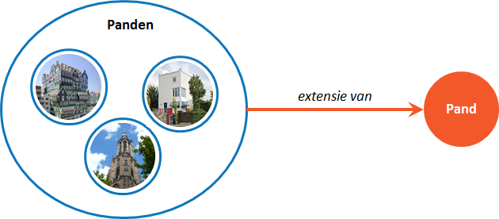Een begrippenmodel kan qua diepgang beperkt zijn of juist heel diep gaan:
- Het model kan zich beperken tot een opsomming van termen, met een (woordelijke) uitleg, zonder enig verband tussen de termen. Dit leidt tot een woordenlijst.
- Een taxonomie is een model van begrippen, waarin wordt aangegeven welke begrippen een ‘ruimere’ betekenis hebben dan een ander begrip.
- Een thesaurus gaat een stapje verder. Naast hiërarchische relaties tussen begrippen kent een thesaurus ook andere relaties zoals ‘heeft relatie met’.
- Aanvullend op de thesaurus zijn ook deel-geheel relaties denkbaar.
- Een volledige description logic kent alle rijkdom van eerste orde predikatenlogica. Dat is een volledig uitgewerkte ontologie.
De taxonomie gaat uit van de wiskundige betekenis dat de extensie van een ‘smaller’ begrip altijd een deelverzameling is van de extensie van een ‘breder’ begrip. Bovenin staat dan iets als het begrip ‘ding’ (of ‘iets’), dat wiskundig gedefinieerd kan worden als ‘het begrip met de extensie van alle mogelijke dingen’, en onderin staat het begrip ‘niets’, dat als extensie de lege verzameling heeft.
Deze wiskundige betekenis introduceert een probleem dat benoemd is door Betrand Russell: een begrip is immers ook weer ‘iets’, dus de verzameling van alles moet ook deze begrippen omvatten. Daarom is het verstandig om gelaagdheid aan te brengen: een begrip kan niet gelijktijdig ook onderdeel zijn van de extensie van dat begrip (een begrip kan geen voorbeeld van zichzelf zijn).
Het nadeel van dergelijke modellen, is dat het niet duidelijk is hoe deze modellen zich verhouden tot de brute werkelijkheid: het model creëert een eigen (wiskundige, logische) werkelijkheid, zonder enig verband met de brute werkelijkheid.
Hiervoor introduceren we het axiomatisch begrippenstelsel. Een dergelijk stelsel kent als eigenschappen:
- Begrippen worden gedefinieerd in termen van andere begrippen.
- Elke (betekenisvolle) relatie tussen twee begrippen heeft een richting: van het begrip (A) dat voor zijn betekenis afhankelijk is van het begrip (B).
- Een begrip is voor zijn betekenis afhankelijk van een ander begrip, als dit begrip wordt gebruikt in de definitie.
- Als begrip (A) afhankelijk is van begrip (B), dan betekent dit ook dat begrip (A) pas te begrijpen is, als je begrip (B) wordt begrepen.
- Alle betekenisvolle relaties zijn asymetrisch. Dat betekent dat als A->B, dan mag niet gelden: B->A.
- Alle betekenisvolle relaties zijn transitief. Dat betekent dat als A->B en B->C, dan geldt ook A->B->C.
- Er mogen geen circulaire relaties ontstaan. Dat betekent dat niet mag gelden: A->B->C->A.
- Het axiomatisch begrippenstelsel kent uiteindelijk ‘axioma's’: begrippen die niet verder worden gedefinieerd in termen van andere begrippen, maar als ‘axioma's’ worden gezien: begrippen die niet verder toegelicht hoeven te worden, omdat er vanuit gegaan mag worden dat iedereen (binnen de specifieke context) deze begrippen welk begrijpt.
Optimaal is als de axioma's begrippen zijn die als ‘eenvoudig’ worden gekenmerkt, zie hiervoor: woordenlijst taalniveau B1 [EENVWOORD].
2.4.3 Brute werkelijkheid versus data
Met een axiomatisch begrippenkader kan het sociaal/juridisch kader min of meer geformaliseerd worden beschreven. Dit is echter nog geen model in de zin van een volledig uitgewerkte ontologie waarin die werkelijkheid kan worden gerepresenteerd zodat data over de werkelijkheid kunnen worden gebruikt. In de ‘wet basisregistratie adressen en gebouwen’ wordt bijvoorbeeld gedefinieerd wat een straat is, wat een huisnummer is en wat een woonplaats is. Deze definities kunnen worden gerepresenteerd in een samenhangend axiomatisch begrippenkader. Dat geeft inzicht, maar is nog niet voldoende voor het ontwerpen van een informatiesysteem waarin data over de ‘dingen’ die met een straat, huisnummer en woonplaats worden aangeduid kunnen worden opslagen.
Zo kan in de BAG bij een ‘nummeraanduiding’ worden gedefinieerd dat deze ‘is gerelateerd aan’ een ‘openbare ruimte’ en dat een ‘openbare ruimte’ is ‘gerelateerd aan’ een ‘woonplaats’. Voor een ontologie is veel meer nuance nodig. Bijvoorbeeld ‘in 1 openbare ruimte mag een nummeraanduiding maar 1 keer voorkomen’.
Wat daarbij soms uit het oog wordt verloren, is het feit dat het om een registratie gaat en niet om de echte (brute) werkelijkheid. Een registratie bevat alleen maar data die iets veronderstellen over de brute werkelijkheid: een klantenregistratie bevat geen ‘klanten’, maar ‘data over klanten’. En zelfs een registratie van artikelprijzen bevat geen ‘artikelprijzen’, maar slechts ‘data over artikelprijzen’.
Als dit onderscheid uit het oog wordt verloren, kan het leiden tot Kafkaëske-toestanden: ‘Ik bel u, omdat ik een aanmaning heb ontvangen dat ik mijn telefoonabonnement niet zou hebben betaald, maar ik ben helemaal geen klant van u’. Reactie: ‘Dat klopt, u staat niet in ons computersysteem. U hoeft niet te betalen’. Vervolg: ‘Maar er staat nu wel een deurwaarder mijn huis leeg te halen!!’. Reactie: ‘Dat kan niet, u bent geen klant volgens ons computersysteem’. Hier wordt de ‘echte’ werkelijkheid ontkend, en de ‘administratieve’ werkelijkheid als de ware verondersteld! (meer voorbeelden op bijvoorbeeld "Computer says no" [COMPSAYSNO])
Als sketch in een humoristisch programma zal iedereen dit herkennen en er om lachen, maar er zijn ook schrijnende gevallen waarbij mensen hun uitkering of toeslagen verliezen omdat de administratieve werkelijkheid voor de echte werkelijkheid wordt gehouden. Aan de andere kant wordt ook misbruik gemaakt van de soms gebrekkige koppeling tussen data in administratieve werkelijkheden, bijvoorbeeld bij BV fraudes.
2.4.4 Context van data
Een registratie bestaat uit data. Data is de vastgelegde uitdrukking van 1 of meerdere feiten (zie ook [GEGEVEN]. Wij gebruiken in dit document het begrip "data" als synoniem voor het (Nederlandse) begrip "Gegeven"). Dergelijke feiten kunnen afkomstig zijn uit verschillende werkelijkheden:
- Het kunnen feiten uit de brute werkelijkheid zijn die zijn waargenomen door een sensor, of door een persoon ingevoerd in het informatiesysteem.
- Het kunnen feiten uit een (andere) administratieve werkelijkheid zijn, die via een automatisch koppeling het informatiesysteem binnenkomen.
- Het kunnen (veronderstelde) feiten uit een institutionele werkelijkheid zijn, ingevoerd door mensen of afgeleid op basis van rekenregels.
data vormen een discrete representatie van het waargenomen continuüm. Het betreft een waarneming van de voortdurend veranderende werkelijkheid, die op enig moment volgens een bepaald model (dat wil zeggen: een vereenvoudiging van de werkelijkheid) wordt vastgelegd. Het kan dus best zo zijn dat een waarneming van diezelfde werkelijkheid, op een ander moment, of op hetzelfde moment maar volgens een ander model, leidt tot andere data.
Het model specificeert welke aspecten van de werkelijkheid worden vastgelegd. Vrijwel elke moderne modelleringswijze maakt daarbij onderscheid tussen representaties van dingen en representaties van eigenschappen van die dingen. Dingen zijn concreet (een persoon, een gebouw, een voertuig), of abstract (een organisatie, een begrip, een kleur). Met eigenschappen worden dingen aan elkaar gerelateerd. Vaak wordt dan ook van een relatie gesproken.
Elke specificatie gaat uit van reeds aanwezige kennis bij degene die de specificatie leest en toepast. Hoe uitgebreider en nauwkeuriger de specificatie, hoe beter gebruikers begrijpen hoe zij hun waarnemingen moeten vertalen naar data. Andersom helpt dit gebruikers om data te interpreteren, dat wil zeggen terug te vertalen naar de werkelijkheid.
Een basisregistratie (bijvoorbeeld de kadastrale registratie) pretendeert een representatie te zijn van de werkelijkheid, maar het is niet de werkelijkheid. Bovendien is de representatie een afspiegeling van de juridische werkelijkheid. We illustreren dit aan de hand van het voorbeeld "kopen van een huis":
- Het kopen van een huis is typisch een ‘levensgebeurtenis’ in de ‘brute’ werkelijkheid.
- Daarvoor moeten juridisch meerdere dingen worden, zoals de aflossing van de hypotheek door de vorige eigenaar, het vestigen van een hypotheek en de overdracht. Dit zijn verschillende juridische feiten die stuk voor stuk als zodanig worden vastgelegd door een notaris.
- Deze juridische feiten leiden tot een bijwerking van de Kadastrale registratie.
Zo bekeken is een basisregistratiehouder eigenlijk een 2e lijns organisatie. De betrokkenen in de brute werkelijkheid gaan naar een loket om hun zaken juridisch te regelen. Bij een vastgoedtransactie is dit een notaris die de transactie juridisch vastlegt in een akte (‘waarvan akte’), bij een geboorte is dit een ambtenaar van de burgerlijke stand die een geboorteakte opstelt.
De basisregistratie schrijft deze akte in en verwerkt de in de akte opgetekende rechtsfeiten in de registratie. Daarbij hanteert de houder een standaard basispatroon dat bij iedere basisregistratie wordt gebruikt:
- Een basisregistratie wordt altijd bijgewerkt op basis van een brondocument met een juridische status. Bij het Kadaster zijn dat meestal notariële akten, maar het kan ook een beschikking van een publiekrechtelijke organisatie zijn. Voorbeelden uit andere basisregistraties zijn een oprichtingsakte van een bedrijf of een geboorteakte van een persoon.
- In dit brondocument zijn een of meerdere rechtsfeiten opgetekend.
- Er is altijd een aanleiding in de brute werkelijkheid om een specifiek brondocument met de betreffende rechtsfeiten op te stellen.
- De rechtsfeiten worden verwerkt in de registratie. Daarbij is sprake van een was-situatie (vóór de verwerking van het rechtsfeit) en een wordt-situatie (ná de verwerking van het rechtsfeit). De laatste geeft de nieuwe actuele rechtssituatie aan.
- Wijzigingen in de registratie zijn al dan niet relevant voor ketenpartners die informatie afnemen. Zo zal een gemeente voor wat betreft de basisregistratie Kadaster geïnteresseerd zijn in ‘overdracht van eigendom’ om de WOZ aanslag naar het goede adres te kunnen sturen, maar niet in ‘inschrijving hypotheek’.
Een ander voorbeeld van een situatie waarin duidelijk is dat de data niet de werkelijkheid zijn is een kadastrale grens die in een kaart is getekend. Als een lijn op de kaart wordt vergroot naar ware grootte kan deze wel een meter breed worden. De meeste conflicten over een erfgrens gaan over minder. Bij zo’n conflict, dat regelmatig is te zien bij het TV programm "de rijdende rechter", gaat een rechter in de regel samen met een landmeter naar de betreffende locatie zodat hij kan beoordelen hoe de werkelijkheid is. De uitspraak van de rechter is dan op basis van zijn beeld van de werkelijkheid.
Om data te kunnen beoordelen is dus altijd informatie nodig over de wijze waarop deze is ingewonnen en wanneer en waar deze is ingewonnen. In sommige gevallen is het zelfs van belang om te weten wanneer data is geregistreerd. Voor het verkrijgen van huurtoeslag is het niet voldoende ergens te wonen waar je recht hebt op die toeslag. Dit moet op tijd (niet na bijvoorbeeld een aantal jaren) worden gemeld aan de houder van de registratie op basis waarvan die toeslag wordt toegekend.
2.4.5 Correcties
Een bijzonder patroon vormen correcties in de registratie. Ten opzichte van het basispatroon zijn er vooral enkele nuanceverschillen:
- Het brondocument is een intern stuk dat is opgesteld door iemand die daartoe bevoegd is.
- De aanleiding zit niet in de brute werkelijkheid en ook niet in de juridische werkelijkheid. Aanleiding is een constatering dat de registratie niet in overeenstemming is met de feitelijke juridische situatie.
- In de registratie is nog steeds sprake van een was-wordt transformatie.
- Deze wijziging is wel degelijk relevant voor afnemers die hun processen baseren op de informatie uit de registratie. Daarmee is het ook relevant om niet alleen vast te leggen dat het een correctie betreft, maar ook welke gebeurtenis is gecorrigeerd. Dit kan er bijvoorbeeld toe leiden dat een aanvankelijk geweigerde toeslag alsnog wordt toegekend.
2.4.6 Van begrippen naar (vastlegging van) data
Met het begrip dat verkregen is van de onderwerpen uit de wet, kan een datamodel geformuleerd worden, zoals afgebeeld in onderstaand figuur:
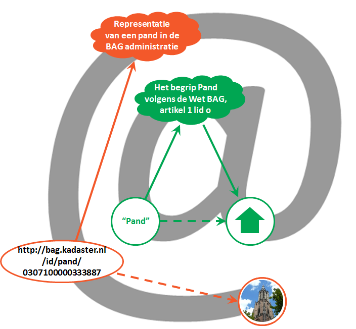Op deze wijze wordt uitdrukking gegeven aan het volledige model:
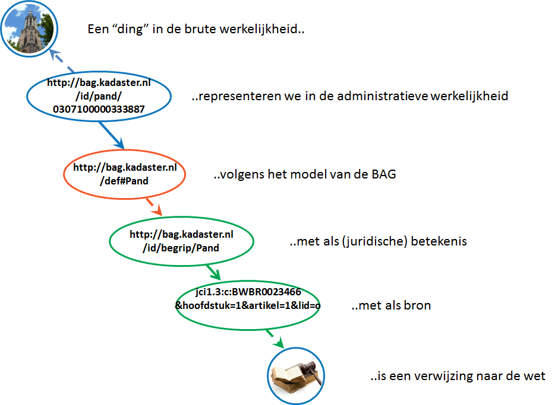2.4.7 Begrippen in deze sectie

|
Een administratieve gebeurtenis is een gebeurtenis in een IT systeem (zoals het toevoegen van data) |
|
Een levensgebeurtenis is een gebeurtenis in de natuurlijke werkelijkheid, in "het leven van een mens" |
|
|
Een rechtshandeling is een juridische gebeurtenis die plaatsvindt conform de wet- en regelgeving |
|
| 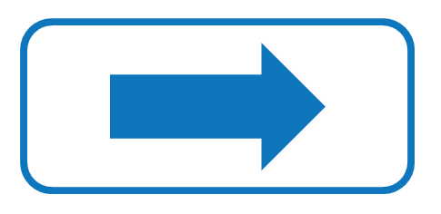 |
Een regel beschrijft hoe feitelijke situaties zich ten opzichte van elkaar verhouden |
3 Modelleerwijze
3.1 URI Design pattern voor Linked Data
De URI-strategie is primair bedoeld voor data waarmee objecten of concepten worden gedefinieerd, waar andere toepassingen naar kunnen verwijzen. Data waar niet naar wordt gelinkt valt buiten de scope. Om dit toe te lichten worden drie categorieën informatiebronnen onderscheiden:
- Standaarden
- Authentieke registraties
- "gewone" Applicaties
Elk met de nadruk op een van drie categorieën "data":
- Metadata (zoals begrippen in een conceptueel model)
- Referentiedata
- "gewone" Data
Dit onderscheid in verschillende soorten "data" is al in 2006 benoemd door Malholm Chisholm in "Master Data versus Reference Data" [REFDATA]. Malcolm maakt onderscheid in de volgende catagorieen:
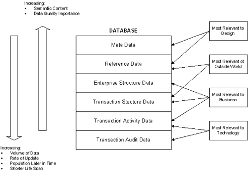Opvallend in dit figuur is dat niet alleen metadata en referentiedata relevant is voor de buitenwereld. Ook "gewone" data kan relevant zijn voor de buitenwereld, bijvoorbeeld in een supply chain.
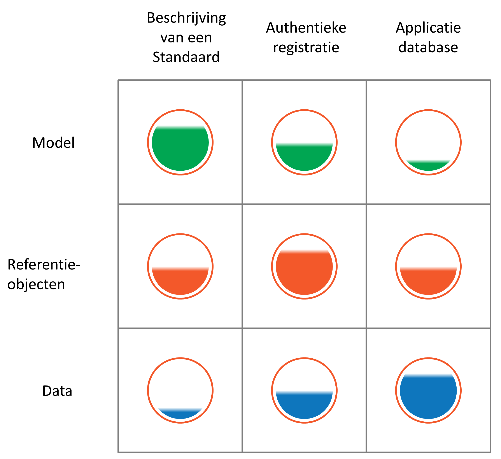De grootte van een cel in het diagram geeft een indicatie van het gewicht van de categorie concepten in die categorie van informatiebronnen. De belangrijkste functie van een standaard is gewoonlijk om een conceptueel model te definiëren. (a1) Authentieke registraties worden doorgaans opgezet om een administratie van Referentieobjecten bij te houden (b2) en een 'gewone' Applicatie heeft gewoonlijk slechts de functie om Data te verzamelen voor een specifiek doel (c3).
Uiteraard kunnen een Authentieke registratie en een Applicatie een eigen Model hebben (b1 en c1), sommige Standaarden verstrekken een lijst met Referentiewaarden (a2) en Applicaties kunnen lokale Referentiegegevens hebben (c2). Ook kunnen Standaarden en Registers wat 'gewone' data nodig hebben (a3 en b3), bijvoorbeeld om wijzigingen en herkomst van hun referentiegegevens vast te leggen.
De URI-strategie ondersteunt het hergebruik van Concepten en Referentieobjecten door andere data-collecties. De interessante categorieën zijn dan ook de termen in de Modellen en de Referentiegegevens.
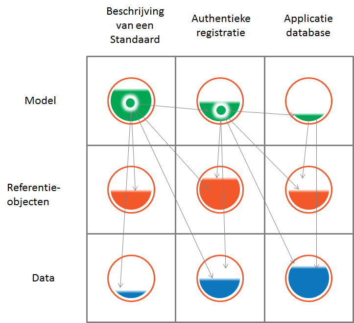Termen, zoals klassen en eigenschappen, die zijn gedefinieerd in de Modellen van een Standaard of een Authentieke registratie, worden gebruikt om Referentieobjecten en Data te classificeren.
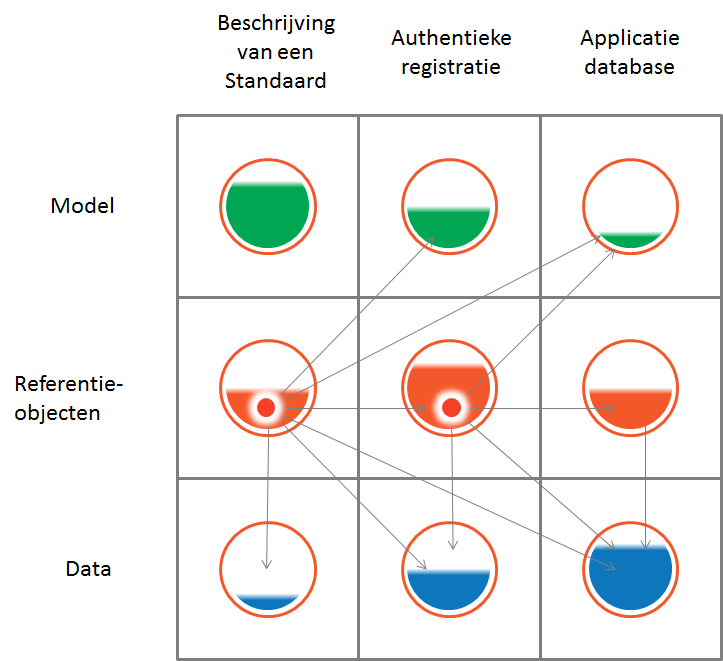Referentieobjecten, gedefinieerd door Standaarden (denk aan waardenlijsten), maar vooral die beheerd worden in Authentieke registraties, worden gebruikt in "gewone" Applicaties.
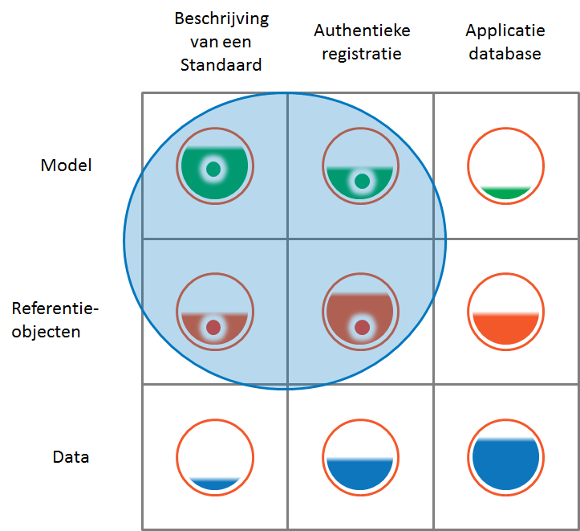De URI-strategie is bedoeld voor Modellen en Referentieobjecten van zowel Standaarden als Authentieke registraties. Dus niet in eerste instantie voor de "gewone" Data (rij 3) of concepten in "gewone" Applicaties (kolom c) aangezien daar nou eenmaal niet of nauwelijks naar wordt gelinkt.
Gedurende de PiLOD heeft de Werkgroep URI-strategie een aantal inzichten opgedaan bij de analyse van de voorgestelde varianten.
3.1.1 No register, no identifier
In Linked Data theorie wordt nogal eens beweerd dat het nodig is om voor elk concept of object een URI te definiëren, waardoor het lijkt alsof je pas kunt beginnen als je voor elk concept of object een nieuwe Linked Data URI hebt verzonnen en 'gemunt' (to mint a URI). Maar waarom zou je alles opnieuw definiëren? De mensheid definieert al eeuwen lang authentieke identificatie voor standaard begrippen en referentieobjecten. Denk aan encyclopedieën, taxonomieën en registraties van inwoners of van onroerende goederen. We noemen hier een voorziening voor het authentiek definiëren en identificeren van concepten of referentieobjecten een register. Onder register verstaan we hier dus zowel een specificatie van begrippen/concepten in een standaard, als een authentieke registratie van referentieobjecten.
Doel van deze niet geringe inspanning om registers op te zetten is, om vanuit verschillende administraties op een eenduidige manier met een afgesproken term (een identifier) naar nauwkeurige en meer uitgebreide definities van abstracte begrippen en objecten te kunnen verwijzen zodat iedereen weet wat bedoeld wordt. Informatie uit verschillende administraties kan vervolgens gekoppeld worden door – handmatig – gelijke termen (gewoonlijk namen of nummers) bij elkaar te zetten.
Nu we dat willen gaan automatiseren is er niets op tegen om deze bestaande registers te blijven gebruiken. Maar wat nou, als we naar begrippen of objecten willen verwijzen waar nog geen register voor bestaat? De enige manier om voor ontbrekende begrippen en objecten een URI te munten is toch door deze vast te leggen in een nieuw register. Als we merken dat er voor bepaalde begrippen of objecten geen register bestaat, terwijl we hier wel URIs voor willen hebben, dan is de enige manier om een register aan te leggen. Kortom: je kunt alleen URIs munten voor begrippen of objecten die vastliggen in een register. Dit belangrijke inzicht vatten we samen in het adagium: 'No register, No identifier'.
3.1.2 No register, no model
Een URI "hoort" bij de registratie die oorspronkelijk de URI heeft gemunt. Maar niet alleen de identificatie en de registratie zijn met elkaar verbonden, ook de betekenis van de URI is verbonden met de registratie.
De (eigenaar van de) registratie bepaalt wat de URI inhoudt. Vandaar ook het belang om in de URI de naam van de registratie op te nemen. Via de domeinregistratie (in Nederland SIDN [SIDN]) is vervolgens te lezen wie de eigenaar is van deze registratie. Op die manier is duidelijk wie de "eigenaar" is van deze URI, en daarmee van de betekenis en de identificatie
3.1.3 Hergebruik zonder register
Bovenstaande opmerkingen lijken te suggereren dat het altijd noodzakelijk is om URI's te maken die zich houden aan de URI-strategie en vanuit een register worden bediend. Dat is echter niet het geval.
Er zijn situaties denkbaar om een afwijkende URI strategie te hanteren. Twee veelgebruikte voorbeelden zijn:
- Een URN, zoals in de ECLI standaard:
jci1.3:c:BWBR0023466&hoofdstuk=1&artikel=1; - Een UUID, bijvoorbeeld:
urn:uuid:550e8400-e29b-41d4-a716-446655440000.
Het gebruik van een URN is aan te bevelen als er niet automatisch een uniek register aan te wijzen is, maar als er wel een afspraak is wat een URI betekent en welk model er bij hoort (zoals in dit geval bij de ECLI standaard).
Het gebruik van een UUID is aan te bevelen als het gaat om data waarvan niet verwacht wordt dat deze buiten de applicatie wordt gebruikt.
Mocht op een later moment de data alsnog via een register ontsloten worden, dan kan in beide gevallen de URN of UUID omgezet worden naar een URL, bijvoorbeeld:
- ECLI via wetten.nl:
http://wetten.overheid.nl/1.0:c:BWBR0023466&hoofdstuk=1&artikel=1; - Een UUID omgezet naar URL:
http://bp4mc2.org/id/550e8400-e29b-41d4-a716-446655440000
3.1.4 Uitgangspunten
De volgende uitgangspunten zijn in de loop der jaren geformuleerd (in afnemende volgorde van belang):
Sluit aan bij internationale best-practices
Alleen ga je sneller, maar samen kom je verder. Door aan te sluiten op internationale ontwikkelingen profiteer je van oplossingen die wereldwijd bedacht worden. Ook is Europese regelgeving van steeds groter belang voor de Nederlandse overheid.
Sluit aan bij bestaande ontwikkelingen.
De strategie raakt vele partijen en systemen en kan niet in een keer als iets nieuws worden ingevoerd. Kijk daarom goed naar wat er op het gebied van standaardisatie en authentieke registraties toch al gebeurt en maak daar maximaal gebruik van.
Houd rekening met afwijkende strategieën.
Ook als er systemen worden gemaakt die om wat voor reden dan ook niet de nationale strategie volgen, moet hiermee gelinkt kunnen worden.
Houd het zo simpel mogelijk, maar niet simpeler.
Bij een te complexe benadering zal de strategie niet of onvoldoende worden toegepast, bij een te eenvoudige benadering zal de strategie niet voldoende opleveren.
Persistentie.
Persistentie betekent dat oplossingen ook stand houden als de organisatie eromheen wijzigt. Ook al moeten we accepteren dat we nog niet alles weten en dat voortschrijdend inzicht tot andere keuzes kan leiden. Persistentie betekent niet voor de eeuwigheid, maar een onderneming of instantie moet er wel bedrijfskritische systemen op durven te ontwikkelen.
Schaalbaarheid.
Schaalbaarheid is van belang om beheerkosten te kunnen blijven overzien, ook als toepassingen groeien. Het is onvoorspelbaar hoeveel applicaties er de komende jaren zullen ontstaan. Elk onderdeel van de strategie zal dan ook schaalbaar moeten worden opgezet.
Begrijpelijkheid.
Begrijpelijkheid is noodzakelijk om te zorgen dat afspraken makkelijk worden opgepakt en overgenomen.
Vertrouwen.
Vertrouwen is nodig om organisaties te bewegen om zelf strategisch te kiezen voor het gebruik en publicatie van Linked Data.
Machine-leesbaarheid.
Machine-leesbaarheid zorgt ervoor dat er met Linked Data ook werkende oplossingen kunnen worden gebouwd.
Menselijke leesbaarheid
Menselijke leesbaarheid is ook belangrijk om te zorgen dat men oplossingen vertrouwt en begrijpt. Maar als de machine de data niet goed gebruiken kan, dan werkt het überhaupt niet.
3.1.5 URI-patroon
In navolging van de drie eerder genoemde bronnen gaan wij er vanuit dat http-URIs de voor de hand liggende keuze vormen. In alle drie de strategieën wordt uitgegaan van nadere afspraken over het te gebruiken patroon om de http-URI op te bouwen. Het patroon voor http-URIs dat in deze bronnen wordt aanbevolen - en wat wij daarom overnemen - is:
http://{domain}/{type}/{concept}/{reference}
We behandelen de vier onderdelen hierna één voor één.
3.1.6 URI-patroon: {domain}
Het {domain} deel bevat het internet domein en eventueel een pad binnen dat domein:
{domain} = {internet domain}/{path}.
Het {domain} dient twee doelen. Ten eerste is het een belangrijk instrument om unieke identificaties te verkrijgen: twee objecten, die beheerd worden in twee verschillende databases, kunnen toevallig dezelfde identificatie krijgen (bijvoorbeeld een kadastraal perceel met id 010101 en een rechtspersoon met id 010101). Als nu zowel het Kadaster als het Nieuw HandelsRegister (NHR) besluit om deze objecten als linked data te publiceren, worden er toch twee unieke URIs gevormd: de een begint bijvoorbeeld met http://brk.nl/ en de ander met http://nhr.nl/. Ten tweede zorgt een goedgekozen domein voor herkenbaarheid en vertrouwen. Kadastrale percelen met een URI als http://data.brk.nl/perceel/010101 hebben een betrouwbaarder uitstraling dan bijvoorbeeld http://data.vindhethier.eu/perceel/010101.
Het {path} kan worden gebruikt als binnen een register verschillende verzamelingen objecten leven, waarbij dubbele id's kunnen voorkomen. Het {path} kan dan gebruikt worden om extra namespaces te creëren.
Aanbevelingen
- Één taak: het register
Het{domain}is bij voorkeur exclusief gereserveerd voor publicatie van het register en het resolven van de URIs van het register. Als het domein namelijk een onderdeel is van een uitgebreider domein, waarop ook nog andere publicaties plaatsvinden, dan kan er vroeger of later sprake zijn van de noodzaak tot her-organisatie van de publicaties, met alle gevolgen van dien voor de persistentie van de URIs in het register.
Het idee om voor de overheid een centraal domein beschikbaar te stellen voor URIs (zoals de Britse overheid dat ooit opperde https://www.gov.uk/government/publications/designing-uri-sets-for-the-uk-public-sector) hebben we na uitgebreide afweging verworpen. Deze benadering is afhankelijk van een centrale voorziening die weer door een partij moet worden beheerd. De houders van de registers zouden op die manier afhankelijk worden van deze partij om hun URIs te kunnen munten volgens de URI-strategie. Een centraal register van registers mag dus nooit een onmisbaar onderdeel van het stelsel worden. De registerhouders moeten volledig zelfstandig kunnen beschikken over het domein van hun register. Zie ook [ISSUE2] - Geen organisatienaam in het
{domain}
Het is sterk af te raden om in het{domain}een organisatienaam op te nemen, hoe verleidelijk dat ook vanuit marketing oogpunt kan zijn. Opnieuw is persistentie hierbij het belangrijkste argument. Organisaties kunnen immers gesplitst, gefuseerd, of hernoemd worden en zij krijgen dan doorgaans een nieuwe naam en kiezen een nieuw internetdomein. Het hernoemen van de URIs verstoort de persistentie. Het blijven gebruiken van het oude domein – iets waar puur technisch niets op tegen zou zijn – kan echter de indruk wekken dat de data ook verouderd is. Registers zullen over het algemeen blijven bestaan zolang ze een bepaald nut dienen. Als het register daadwerkelijk wordt opgeheven of overgaat in een nieuw register, dan zijn de modellen en referentieobjecten in het oude register doorgaans ook daadwerkelijk uit de tijd. - Terughoudend met
{path}
Probeer het gebruik van{path}zo veel mogelijk te vermijden. Hoe korter de URI, hoe handiger in gebruik. Hoe minder informatie in de URI, hoe kleiner de kans dat er later op teruggekomen moet worden.
3.1.7 URI-patroon: {type}
Het {type} geeft aan om wat voor soort URI het gaat. Dit kan zijn:
- 'id': identifier van een object (individual/instance) in een register.
- 'doc': documentatie (metadata) over het object in het register.
- 'def': definitie van een term in een ontologie.
Aanbevelingen
- Gebruik 303 redirect van de 'id'-URI naar de 'doc'-URI
In [COOLURIS] wordt in sectie 4.2 uitgelegd hoe dit bedoeld is. - Gebruik Hash-URIs voor termen uit het model.
In een Linked Data applicatie is het onderscheid tussen model en content soms moeilijk te maken. In een relationele database is dat onderscheid doorgaans duidelijker: tabellen en kolommen geven het model aan en de inhoud van de tabellen vormen de content. In Linked Data kun je echter een klasse ook beschouwen als een instance (namelijk van de klasse rdfs:Class). Om de gebruiker van een register meer duidelijkheid te verschaffen over welke termen echt tot het model behoren en welke termen gezien kunnen worden als inhoud van het register, verdient het aanbeveling om de URIs van de eersten als hash-URI (#-URI) te definiëren: http://{domain}/def#{term}. Dit heeft als bijkomend voordeel dat de URI http://{domain}/def alle termen uit het model oplevert. In 'Cool URIs for the Semantic Web' wordt uitgelegd hoe dit bedoeld is in sectie 4.1. Als de ontologie erg omvangrijk is, kan ook gekozen worden om geen gebruik te maken van hash-URIs.
3.1.8 URI-patroon: {concept}
Het {concept} geeft de menselijke lezer een indicatie van het soort concept dat de URI identificeert. Het {concept} is belangrijk om twee redenen. Ten eerste kan het een uitkomst bieden als objecten binnen de registratie geen unieke identifiers hebben, maar wel uniek zijn per soort object. Bijvoorbeeld gemeente Utrecht en provincie Utrecht. Ten tweede, en dit is belangrijker, levert het een begrijpelijker URI op. Een menselijke lezer kan vermoeden dat http://bagregister.nl/id/pand/01010101 de URI van een pand uit de BAG is.
Een mogelijk nadeel van het opnemen van {concept} in de URI is dat hiermee betekenis in de URI wordt opgenomen, terwijl betekenisloze IDs over het algemeen eenvoudiger persistent te maken zijn.
Aanbevelingen
{concept}betekent niets.
Het is zeer onverstandig om{concept}enige betekenis toe te kennen voor de machine. URIs zijn in technische zin [AXIOMS]. Het is dus niet zo dat het {concept} per se de klasse is waartoe een object behoort. Het helpt alleen de menselijke lezer, bijvoorbeeld de beheerder van een semantisch model, om de URIs te herkennen. [[COOLURIS]] en [[URISTYLE]]- Denk ook bij het kiezen van
{concept}aan persistentie.
Als het in een registratie denkbaar is dat objecttypen (klassen) van naam veranderen, maar dan nog wel dezelfde klasse vertegenwoordigen, is het niet verstandig dit onderdeel in de URI op te nemen. Neem in dat geval een hogere klasse op. Volgens sommigen betekent het veranderen van het type van een instance per definitie dat er niet langer sprake is van dezelfde instance, maar van een andere instance, van het andere type. Voorbeeld: stel dat het Centraal Orgaan opvang Asielzoekers (COA) wordt omgevormd van zelfstandig bestuursorgaan (zbo) naar agentschap. [[KST-33042-21]] En dat we als URI van het COA zouden kiezen voor:{domein}/id/zbo/coa. Dan wordt dat na de omvorming{domein}/id/agentschap/coa. Zouden we kiezen voor{domein}/id/organisatie/coadan hoeven we de URI niet aan te passen, maar kunnen we ook geen onderscheid meer maken tussen de COA als ZBO en de COA als agentschap.
3.1.9 URI-patroon: {reference}
De {reference} is de identificerende naam of code van het individuele object. Wat betreft {reference} geeft de URI strategie veel vrijheid, aangezien de eisen in verschillende toepassingen sterk uiteen kunnen lopen. Een {reference} kan zijn: een identificerend nummer, een alfanumerieke code, een woord of naam, etc. Elk register heeft wel een manier om de individuele objecten in de verzameling uniek aan te duiden. Deze unieke aanduiding kan worden opgenomen in de {reference}.
Aanbevelingen
- Namen of nummers?
Er is vaak discussie over het gebruik van 'betekenisloze' identifiers versus 'betekenisvolle' identifiers. Zolang computers geen bewustzijn hebben is elke URI voor de machine een betekenisloze string. Voor mensen kan ook een betekenisloze string betekenis krijgen (020 wordt veel gebruikt door mensen die het label 'Amsterdam' of 'Ajax' niet willen uitspreken, 013 (Tilburgs poppodium), 9292 (OV-informatie), nummer 14 (Johan Cruijff). Namen of nummers, voor beiden is wat te zeggen. Nummeren heeft als voordeel dat het nauwkeuriger lijkt en er geen homoniemen voor kunnen komen. Maar je verliest herkenbaarheid en hanteerbaarheid voor mensen, zonder steeds de labels bij de hand te hebben.- In de praktijk zijn de URIs voor de concepten in vrijwel alle semantische standaarden betekenisvol en bevatten zij doorgaans het volledige label (naam) waarmee de term voor de mens wordt aangeduid (meestal als CamelCase geschreven zodat er geen spaties in voorkomen).
- Bij grote aantallen objecten wordt het ondoenlijk om voor elk object een herkenbare unieke naam te bedenken. We gaan dan - vrijwel vanzelf - nummeren.
- Tussen deze twee uitersten zit een grijs gebied. Voor kleine, stabiele sets met objecten (bijvoorbeeld provincies) is het voordelig om de hele naam in de URI op te nemen, bij iets grotere sets, met meer mutaties, komen vaak lange namen voor die de URI onhandelbaar maken. Het kan dan een oplossing zijn om afkortingen in de URI te gebruiken.
- Vermijd vreemde tekens in een URI.
Het beste is om zich te beperken tot lowercase letters, cijfers, en eventueel koppeltekens als scheidingsteken.
3.1.10 Aanbevelingen voor "private" data
Steeds meer “private” data wordt gepubliceerd, waardoor het wellicht moeilijk is om de grens te trekken tussen “eigen” data (die niet de publieke URI-strategie hoeft te volgen), en “eigen data ter gebruik door anderen” (die wel de publieke URI-strategie zou moeten volgen?). Daarom de aanbevelingen:
- Gebruik als je nieuwe ID’s uitgeeft een UUID;
- Gebruik als je een URI maakt iets dat uniek is in de wereld (dus volg in ieder geval de URI strategie voor het deel achter het domein, of gebruik UUID’s)
- Maak eventueel een owl:sameAs naar een URI die WEL publiek is, als je dit later wilt.
- Maak onderscheid tussen de ID en de DOC uri: ID uri’s kun je later toevoegen, maar moeten publiek uniek zijn, doc-uri’s mogen naar andere domeinen gaan.
3.2 Begripkader
Begrippen maken duidelijk welke "onderwerpen van gesprek" er bestaan: over welke actoren, objecten en gebeurtenissen er wordt gesproken. Alle deze begrippen worden formeel gedefinieerd, waarbij iedere definitie wordt opgebouwd volgens strikte regels. De essentie is dat elk begrip wordt uitgelegd in termen van andere begrippen, totdat uiteindelijk elk begrip is gedefinieerd. Om te voorkomen dat dit proces nergens eindigt wordt gestopt bij begrippen waarvan de betekenis als vanzelfsprekend wordt aangenomen. In een logisch model worden dit axioma's genoemd. In het begrippenkader zijn dit de begrippen die in het model niet worden gedefinieerd.
3.2.1 Model
Specialisatie en generalisatieIedere definitie heeft een duidelijke opbouw, namelijk ‘Een {te definiëren begrip} Is een {ander begrip} dat..’. Bijvoorbeeld in de context van het Kadaster: ‘Een zakelijk recht is een recht dat..’ Een recht is een typisch voorbeeld van een basisbegrip ofwel een axioma in het model. Dit kan juridisch worden uitgelegd, maar voor een leek zal die niet meer duidelijkheid geven dan het besef dat het bij het Kadaster net als bij elke overheidsorganisatie om het vastleggen en bewaken van rechten en plichten gaat.
Het definiëren van een begrip in termen van een ander begrip kan op twee manieren:
- Een {begrip} is een {een ander begrip} dat..
- Een {begrip} is een {een ander begrip} of {nog een ander begrip} of..
In het eerste geval gaat het om een specialisatie. In het tweede geval gaat het om een generalisatie. Een voorbeeld van een specialisatie is het hierboven genoemde ‘zakelijk recht’ dat een specialisatie is van ‘recht’. Je moet eerst het begrip ‘recht’ begrijpen om te begrijpen van een ‘zakelijk recht is’.
Een voorbeeld van een generalisatie is het begrip ‘persoon’ bij de overheid. Dit is een generalisatie van ‘natuurlijke persoon’ en ‘rechtspersoon’. Een natuurlijk persoon is een mens in zijn juridische betekenis. Juristen formuleren dat dan in de trant van ‘in zijn hoedanigheid als drager van rechten en plichten’. Een rechtspersoon is een organisatie, die ook drager van rechten en plichten is. In dit geval moet je eerst de begrippen ‘natuurlijk persoon’ en ‘rechtspersoon’ begrijpen om te begrijpen wat een ‘persoon’ is.
Is opgebouwd uitSoms komt het voor dat een bepaald begrip is opgebouwd uit onderdelen van andere begrippen. Deze constructie heeft een opbouw vergelijkbaar met een specialisatie of generalisatie:
- Een {begrip} is opgebouwd uit een {een ander begrip} en een {nog een ander begrip} en..
Een voorbeeld is het begrip ‘adres’ in de BAG. Dit wordt gedefinieerd als ‘Een adres is een .. bestaande uit de naam van een openbare ruimte, een nummeraanduiding en de naam van een woonplaats’. Om te begrijpen wat een adres betekent moet je begrijpen wat een ‘openbare ruimte’ is, wat een ‘nummeraanduiding’ is en wat een ‘woonplaats’ is.
Is onderdeel vanOok het tegenovergestelde komt voor. Een begrip kan onderdeel zijn van een ander begrip. Deze constructie ziet er als volgt uit:
- Een {begrip} is een onderdeel van een {een ander begrip} dat..
Een voorbeeld is het begrip ‘vestiging’ in het NHR. Dit wordt gedefinieerd als ‘Een vestiging’ is een onderdeel van een maatschappelijke activitiet dat..’. Om dit te begrijpen moet je eerst begrijpen wat een maatschappelijke activiteit is.
Semantische relatieTot slot kan een begrip betrekking hebben op een ander begrip. Dat heet een semantische relatie. Deze constructie komt vaak voor in combinatie met een specialisatie en ziet er dan als volgt uit:
- Een {begrip} is een {een ander begrip} dat betrekking heeft op {nog een ander begrip}..
Een voorbeeld is het eerder genoemde begrip ‘zakelijk recht’ bij het Kadaster. De volledige definitie daarvan is ‘Een zakelijk recht is een .. recht op een zaak..’. In dit geval moet je ook begrijpen wat een ‘zaak’ is om het begrip ‘zakelijk recht’ te begrijpen.
BronvermeldingHet is van belang dat voor elk begrip een bronverwijzing (liefst een juridische) wordt gevonden, waarmee duidelijk wordt welk begrip bedoeld wordt.
3.2.2 Definities en klare taal
De formele definitie is typisch ontleend aan de wet of aan vakliteratuur. Dit is vaak in een begrippenkader dat alleen door ingewijden in het betreffende jargon is te begrijpen. Daarom is meestal een vertaling naar ‘klare taal’ nodig om een begrip ook voor niet-ingewijden duidelijk te beschrijven. Klare taal bevat uitsluitend woorden die door 95% van de mensen worden begrepen. Klare taal is altijd expliciet (‘klaar’). Het bevat geen impliciete duidingen. Er staat gewoon wat er staat, niets meer en ook niets minder. Bij het uitleggen in klare taal worden de volgende richtlijnen gebruikt:
- Bij het uitleggen van een begrip in klare taal worden dezelfde logische constructies gebruikt als bij de formele definitie, namelijk specialisatie, generalisatie, opgebouwd uit, onderdeel van en semantische relatie.
- Termen die op zich niet klare taal zijn, maar ergens anders binnen het begrippenkader worden uitgelegd, kunnen worden gebruikt in deze logische constructies.
- Alle andere woorden in een uitleg moeten voorkomen in de zogenaamde B1 lijst. Dit is een beperkte woordenlijst die alleen woorden bevat waarvan bekend is dat 95% van alle mensen deze begrijpt.
De klare taal uitleg verbindt het juridische vakjargon met het begrippenkader dat we als gewone mensen met elkaar gemeen hebben. Bovendien wordt via het begrip ook de link gelegd met de administratieve registratie.
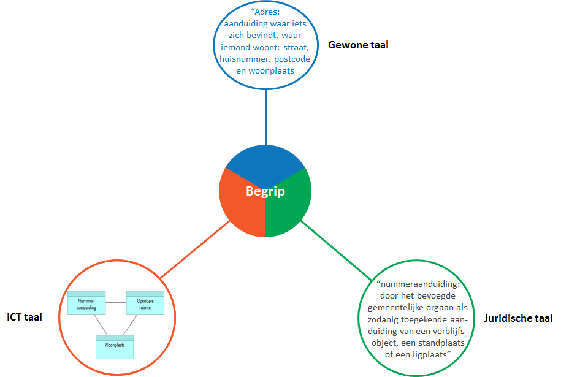3.2.3 Begrippen
Het formulier voor een Begrip kent de volgende opbouw:
| Eigenschap | Verwachte waarde | Voorbeeld |
|---|---|---|
| naam | Geef hier de voorkeursterm op die voor het betreffende begrip gebruikt wordt. | "Fiets" |
| domein | Geef hiermee het domein aan dat beschreven wordt. Binnen 1 domein mag een term niet verwijzen naar twee begrippen. Mocht dit toch dreigen te gebeuren, dan zal of een andere term gekozen moeten worden, of een ander (sub)domein | |
| definitie | Geef hier de formele uitleg van het begrip in woorden.Zie ook: definitie | "Een fiets is een voertuig dat door spierkracht wordt aangedreven" |
| uitleg | Vaak is de formele uitleg niet direct begrijpbaar. Naast de formele uitleg, kan een "klare taal" uitleg van toegevoegde waarde zijn.Zie ook: klare taal | "Een fiets is wat iedereen in Nederland een fiets noemt" |
| toelichting | Geef hier eventueel een toelichting op de definitie: aanvullingen, extra uitleg, voorbeelden | "Het is niet uitgesloten dat een fiets een motor heeft, bijvoorbeeld bij een electrische fiets |
| rationale | Hierin geef je aan waarom je voor deze definitie hebt gekozen. Bijvoorbeeld in het geval waarin verschillende wetten een andere definitie geven aan een bepaald begrip. In de rationele geef je aan waarom je juist voor deze definitie hebt gekozen en niet voor de andere. Ook zou je kunnen denken aan een toelichting waarom je in de definiëring afwijkt van de wettelijke definitie, of een toelichting uit de Memorie van Toelichting op een wetsartikel. | "Overgenomen van wikipedia" |
| synoniem | Geef eventuele alternatieve aanduidingen voor het begrip op. Dit kan een afkorting zijn of een term die in het verleden gebruikt werd voor het begrip, maar nu niet meer de voorkeur heeft. | "Rijwiel" |
| bron | Neem hier verwijzingen op naar relevante (wettelijke) bronnen. Indien de bron een webpagina is, dan is het gebruik van een URL gewenst. Indien verwezen wordt naar een onderdeel uit de wet, dan wordt hiervoor de standaard juridische verwijzingsmethode gebruikt. | http://nl.wikipedia.org/wiki/Fiets; Voertuigreglement, hoofdstuk 5, Afdeling 9. |
| specialisatie van | Verwijs hier naar het begrip dat een meer algemene, "ruimere" definitie kent, indien een dergelijk begrip in de definitie is opgenomen. Verwijzing wordt gedaan met behulp van de term van het begrip waarnaar wordt verwezen. | Voertuig |
| generalisatie van | Verwijs hier naar het begrip dat een meer specifieke, "smallere" definitie kent en dit "smallere" begrip de betekenis van het begrip bepaald. Deze constructie is eigenlijk alleen zinvol als enkele begrippen worden samengenomen tot een overkoepelend begrip | Vader; Moeder (bij het begrip: "Een ouder is een vader of een moeder") |
| onderdeel van | Verwijs hier naar het begrip dat het geheel vormt, en waarvan de betekenis van dit begrip vanaf hangt. | Fiets (bij een Fietsbel) |
| bestaat uit | Verwijs hier naar het begrip dat het onderdeel is, en waarvan de betekenis van dit begrip vanaf hangt. | Wiel; Trapper; Frame (bij een Fiets) |
| gerelateerd aan | Neem hier de begrippen op de niet eerder zijn meegenomen, en wel bepalend zijn voor de definitie | Spierkrachtaandrijving |
| zie ook | Neem hier begrippen op waarvan het zinvol kan zijn om te bekijken, zonder dat er een betekenisafhankelijkheid is | Motorfiets |
| lijkt op | Gebruik dit element om twee begrippen uit verschillende begrippenstelsels met elkaar te verbinden. Lijkt op geeft aan dat de begrippen op elkaar lijken (maar in detail kunnen verschillen) | |
| gelijk aan | Gebruik dit element om twee begrippen uit verschillende begrippenstelsels met elkaar te verbinden. Gelijk aan geeft aan dat van de begrippen wordt verondersteld dat ze het zelfde zouden moeten betekenen. | |
| exact gelijk aan | Gebruik dit element als je een begrip uit een ander begrippenstelsel wilt incorpereren in je eigen begrippenstelsel, zonder dat je een eigen begrip wilt introduceren |
Naast deze eigenschappen, kent de beschrijving van het begrip ook nog enkele specifieke meta-elementen
Het formulier voor een Beschrijving kent de volgende opbouw:
| Eigenschap | Verwachte waarde | Voorbeeld |
|---|---|---|
| status | Geef hiermee de status van de beschrijving van een begrip aan | |
| verificatie annotatie | Degene die de verificatie uitvoert, kan hier een opmerking plaatsen die betrekking heeft op de huidige beschrijving van het begrip | |
| validatie annotatie | Degene die de validatie uitvoert, kan hier een opmerking plaatsen die betrekking heeft op de huidige beschrijving van het bedgrip | |
| wijzigingsnotitie | De redacteur van de beschrijving kan hier aangeven welke wijziging is doorgevoerd. |
3.2.4 Relatie met standaard vocabulaires
BP4mc2 verwijst zo veel mogelijk naar standaard vocabulaires. Er is voor gekozen om wel een volledige eigen vocabulaire op te bouwen. De reden hiervoor is om vrijheid te behouden in de precieze betekenis die we aan het model willen geven (in het bijzonder het axiomatisch stelsel). Door de koppeling met standaard vocabulaires is het voor elke gebruiker altijd weer mogelijk om terug te vallen naar de standaard. De volgende standaarden worden gebruikt:
| Naam | Prefix | Standaard |
|---|---|---|
| skos |
http://www.w3.org/2004/02/skos/core#
|
Simple Knowledge Organisation System |
| rdfs |
http://www.w3.org/2000/01/rdf-schema#
|
The RDF Schema vocabulary (RDFS) |
| dc |
http://dublincore.org/documents/dcmi-terms/
|
Dublin Core Metadata terms |
| owl |
http://www.w3.org/2002/07/owl#
|
The Web Ontology Language (OWL) |
| lifecycle |
http://vocab.org/lifecycle/schema
|
Lifecycle ontology |
| ro |
http://www.obofoundry.org/ro/
|
OBO ontology |
| Eigenschap | Afgeleid van | Uitleg |
|---|---|---|
| Begrip |
skos:Concept
|
|
| naam |
skos:prevLabel
|
|
| domein |
skos:inScheme
|
De term domein past beter bij de URI-strategie en met wat we bedoelen. Vanuit de context van een thesauris is het feitelijk een "scheme" (of "schema" op z'n Nederlands |
| definitie |
skos:definition
|
|
| uitleg |
rdfs:comment
|
|
| toelichting |
skos:scopeNote
|
|
| rationale |
skos:editorialNote
|
|
| synoniem |
skos:altLabel
|
|
| bron |
dc:source
|
|
| specialisatie van |
skos:broader
|
Hoewel de term "broader" of "breder" c.q. "ruimer" in thesauri vrij gebruikelijk is, hebben we gekozen voor de term "specialisatie van" die beter past op normaal taalgebruik. Daarnaaast geldt dat bij BP4mc2 deze relatie niet de inverse is van "narrower" |
| generalisatie van |
skos:narower
|
Hoewel de term "narrower" of "smaller" in thesauri vrij gebruikelijk is, hebben we gekozen voor de term "generalisatie van" die beter past op normaal taalgebruik. Daarnaaast geldt dat bij BP4mc2 deze relatie niet de inverse is van "broader" |
| onderdeel van |
ro:part_of
|
|
| bestaat uit |
ro:has_part
|
|
| gerelateerd aan |
skos:semanticRelation
|
|
| zie ook |
skos:related
|
|
| lijkt op |
skos:relatedMatch
|
|
| gelijk aan |
skos:exactMatch
|
|
| exact gelijk aan |
owl:sameAs
|
| Eigenschap | Afgeleid van | Uitleg |
|---|---|---|
| Beschrijving |
|
|
| status |
lifecycle:state
|
|
| verificatie annotatie |
skos:editorialNote
|
|
| validatie annotatie |
skos:editorialNote
|
|
| wijzigingsnotitie |
skos:changeNote
|
3.2.5 Grafische representatie
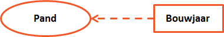Voor elk begrip wordt een rechthoek of een elipse gebruikt. Elipsen worden gebruikt voor begrippen met een eigen identiteit, terwijl rechthoeken worden gebruikt voor begrippen die geen eigen identiteit zijn (maar meer een aspect/eigenschap/hoedanigheid van een ander begrip zijn). In bovenstaand voorbeeld is bovendien een kleurstelling gebruikt. Deze is vrij te kiezen. Alle pijlen hebben een richting. De vorm van de pijl geeft aan wat voor soort relatie is gespecificeerd.
Gerelateerd aanEen gestippelde lijn met pijlpunt geeft aan dat een begrip voor zijn betekenis afhankelijk is van een ander begrip
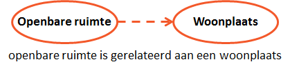Generalisatie van
Een vaste lijn met pijlpunt geeft aan dat een begrip een generalisatie is van een ander begrip
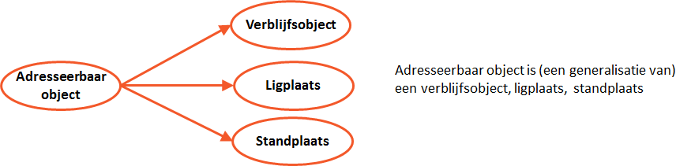Specialisatie van
Een vaste lijn met open pijlpunt geeft aan dat een begrip een specialisatie is van een ander begrip
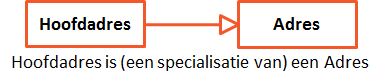Bestaat uit
Een vaste lijn met een open wiebertje geeft aan dat een begrip bestaat uit een ander begrip (open wiebertje aan de kant van het "geheel")
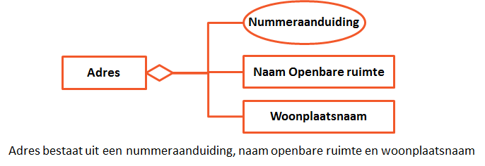Onderdeel van
Een gestippelde lijn met pijlpunt en een open bolletje geeft aan dat een begrip onderdeel is van een ander begrip (open bolletje aan de kant van het "onderdeel")
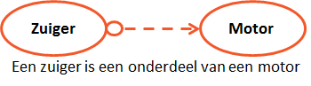3.2.6 Voorbeeld
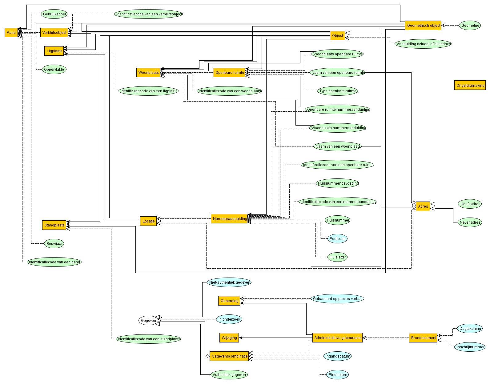Een op deze manier uitgewerkt voorbeeld van het model van de BAG is te vinden op
http://bag.kadaster.nl
. Dit voorbeeld is beschikbaar als html webpagina, in turtle en als grafische representatie.
Dit voorbeeld laat ook mooi zien hoe de uri-strategie werkt. Wanneer in de browser de "vraag"
http://bag.kadaster.nl/id/begrip/Nummeraanduiding
wordt ingetoetst, geeft de achterliggende Linked Data store "some usefull information" terug via de webpagina
http://bag.kadaster.nl/doc/begrip/Nummeraanduiding
en toont de bij dit begrip behorende informatie.
3.3 Gebeurtenissen
3.3.1 Model
Gebeurtenissen hebben dezelfde kenmerken als begrippen die objecten aanduiden, maar hebben ook nog enkele andere kenmerken. Gebeurtenissen zijn alleen van belang als ze betrekking hebben op een object dat onderdeel uitmaakt van de registratie. Gebeurtenissen maken de dynamiek van een registratie zichtbaar. Om te begrijpen wat er is veranderd in een registratie helpt het om te zien wat er is gebeurd.
Het gaat daarbij nog steeds om institutionele feiten, ofwel juridische gebeurtenissen. Deze hebben altijd een aanleiding in de brute werkelijkheid. Juridische gebeurtenissen zijn zoals in de denkwijze aangegeven onderdeel van de sociale werkelijkheid en kennen daarmee vaak een of meerdere actoren, bijvoorbeeld de verkoper en de koper bij de overdracht van een huis. En niet iedereen is bevoegd om een juridisch feit vast te leggen. Dat gebeurt door een beëdigd ambtenaar of door een notaris. Dit wordt een ‘agent’ (in de Engelse betekenis van het woord) genoemd. Tot slot zijn er de regels waaraan moet zijn voordat het feit kan plaatsvinden, de preconditie en de regels die leiden tot het resultaat van het feit, de postconditie.
Bij het definiëren van begrippen worden de volgende richtlijnen gebruikt:
- Een gebeurtenis hangt sterk samen met een handeling (in het engels een ‘Act’). Een handeling kan beschreven met een werkwoord, bijvoorbeeld x 'betaalt' y. Een gebeurtenis kan worden beschreven met een verzelfstandigd werkwoord, bijvoorbeeld ‘Het betalen’. Of als handeling: ‘Betalen rekening’ (dan is ook gelijk duidelijk waarop het werkwoord betrekking heeft). Voor gebeurtenissen geldt dat de nadruk niet ligt op de handeling (‘Het betalen’), maar op de overgang van beginsituatie (aanleiding+voorwaarde) naar eindsituatie. Dit zijn vaak woorden die eindigen op ‘ing’ (hoewel dat niet altijd zo hoeft te zijn). In dit geval dus: ‘De betaling’ (De gebeurtenis bij het overdragen is niet overdraging, maar overdracht). Dit staat bekend onder het substantiveren van werkwoorden. Grappig is dat dit niet werkt voor werkwoorden die niet leiden tot een resultaat. Het lukt bijvoorbeeld niet voor ‘lopen’: de handeling lukt nog wel (‘het lopen’), maar de gebeurtenis niet.
- Daarnaast wordt ook voor een gebeurtenis de definitievorm ‘een {gebeurtenis} is {uitleg} gehanteerd. Dan worden weer werkwoorden gebruikt in de definitie die algemener zijn dan in de gebeurtenis. Ook hier ontstaat dus uiteindelijk een taxonomie van gebeurtenissen.
- De aanleiding wordt altijd beschreven met een voltooid deelwoord, bijvoorbeeld 'koper en verkoper zijn overeengekomen dat een bepaald zakelijk recht wordt verkocht'.
- De preconditie wordt beschreven met een werkwoord in de tegenwoordige tijd. Bijvoorbeeld 'de verkoper is eigenaar'. 'De levering gebeurt per notariële akte, die aan de volgende voorwaarden ... voldoet'.
- Ook de postconditie wordt beschreven in termen van een voltooid deelwoord, bijvoorbeeld 'de koper is eigenaar geworden'.
3.3.2 Gebeurtenis
Het formulier voor een Gebeurtenis kent de volgende opbouw:
| Eigenschap | Verwachte waarde | Voorbeeld |
|---|---|---|
| naam | Geef hier de voorkeursterm op die voor het betreffende begrip gebruikt wordt. | "Fietsen" |
| domein | Geef hiermee het domein aan dat beschreven wordt. Binnen 1 domein mag een term niet verwijzen naar twee begrippen. Mocht dit toch dreigen te gebeuren, dan zal of een andere term gekozen moeten worden, of een ander (sub)domein | |
| definitie | Geef hier de formele uitleg van het begrip in woorden.Zie ook: definitie | "Fietsen is het doen voortbeweging van een fiets door spierkrachtaandrijving" |
| uitleg | Vaak is de formele uitleg niet direct begrijpbaar. Naast de formele uitleg, kan een "klare taal" uitleg van toegevoegde waarde zijn.Zie ook: klare taal | Fietsen is wat je doet op een fiets als je ergens heen wilt |
| toelichting | Geef hier eventueel een toelichting op de definitie: aanvullingen, extra uitleg, voorbeelden | "Het voortbeweging van een fiets door te steppen of naast de fiets te lopen zien we niet als fietsen: in dat geval is er geen sprake van aandrijving. |
| rationale | Hierin geef je aan waarom je voor deze definitie hebt gekozen. Bijvoorbeeld in het geval waarin verschillende wetten een andere definitie geven aan een bepaald begrip. In de rationele geef je aan waarom je juist voor deze definitie hebt gekozen en niet voor de andere. Ook zou je kunnen denken aan een toelichting waarom je in de definiëring afwijkt van de wettelijke definitie, of een toelichting uit de Memorie van Toelichting op een wetsartikel. | "In lijn gehouden met de definitie van fiets" |
| synoniem | Geef eventuele alternatieve aanduidingen voor het begrip op. Dit kan een afkorting zijn of een term die in het verleden gebruikt werd voor het begrip, maar nu niet meer de voorkeur heeft. | "Peddelen" |
| bron | Neem hier verwijzingen op naar relevante (wettelijke) bronnen. Indien de bron een webpagina is, dan is het gebruik van een URL gewenst. Indien verwezen wordt naar een onderdeel uit de wet, dan wordt hiervoor de standaard juridische verwijzingsmethode gebruikt. | |
| specialisatie van | Verwijs hier naar het begrip dat een meer algemene, "ruimere" definitie kent, indien een dergelijk begrip in de definitie is opgenomen. Verwijzing wordt gedaan met behulp van de term van het begrip waarnaar wordt verwezen. | Voortbewegen |
| generalisatie van | Verwijs hier naar het begrip dat een meer specifieke, "smallere" definitie kent en dit "smallere" begrip de betekenis van het begrip bepaald. Deze constructie is eigenlijk alleen zinvol als enkele begrippen worden samengenomen tot een overkoepelend begrip | |
| onderdeel van | Verwijs hier naar het begrip dat het geheel vormt, en waarvan de betekenis van dit begrip vanaf hangt. | Meerdaagse wielerwedstrijd (bij een Etappe) |
| bestaat uit | Verwijs hier naar het begrip dat het onderdeel is, en waarvan de betekenis van dit begrip vanaf hangt. | |
| gerelateerd aan | Neem hier de begrippen op de niet eerder zijn meegenomen, en wel bepalend zijn voor de definitie | Fiets |
| zie ook | Neem hier begrippen op waarvan het zinvol kan zijn om te bekijken, zonder dat er een betekenisafhankelijkheid is | Steppen |
| lijkt op | Gebruik dit element om twee begrippen uit verschillende begrippenstelsels met elkaar te verbinden. Lijkt op geeft aan dat de begrippen op elkaar lijken (maar in detail kunnen verschillen) | |
| gelijk aan | Gebruik dit element om twee begrippen uit verschillende begrippenstelsels met elkaar te verbinden. Gelijk aan geeft aan dat van de begrippen wordt verondersteld dat ze het zelfde zouden moeten betekenen. | |
| exact gelijk aan | Gebruik dit element als je een begrip uit een ander begrippenstelsel wilt incorpereren in je eigen begrippenstelsel, zonder dat je een eigen begrip wilt introduceren | |
| actor | Verwijs hier naar de actor of actoren die een werkelijke rol spelen bij deze gebeurtenis | Fietser |
| agent | Verwijs hier naar de actor of actoren die noodzakelijk zijn bij de gebeurtenis, maar er niet echt aan deelnemen | Scheidsrechter |
| object | Geef hier de objecten (niet-actoren) op die betrokken zijn bij de gebeurtenis: gebruikt worden, verwerkt worden of juist ontstaan uit de gebeurtenis | Fiets |
| aanleiding | Beschrijf hier de situatie die de aanleiding vormt dat de gebeurtenis optreedt. Verwijs naar een gebeurtenis als de aanleiding zelf ook een gebeurtenis is. | Het startschot klinkt |
| voorwaarde | Beschrijf hier de situatie die moet gelden voordat de gebeurtenis succesvol kan plaatsvinden | Alle deelnemers staan stil achter de startlijn |
| eindsituatie | Beschrijf hier de situatie na afloop van de gebeurtenis | De deelnemers zijn vertrokken |
Naast deze eigenschappen, kent de beschrijving van de gebeurtenis ook nog enkele specifieke meta-elementen
Het formulier voor een Beschrijving kent de volgende opbouw:
| Eigenschap | Verwachte waarde | Voorbeeld |
|---|---|---|
| status | Geef hiermee de status van de beschrijving van een begrip aan | |
| verificatie annotatie | Degene die de verificatie uitvoert, kan hier een opmerking plaatsen die betrekking heeft op de huidige beschrijving van het begrip | |
| validatie annotatie | Degene die de validatie uitvoert, kan hier een opmerking plaatsen die betrekking heeft op de huidige beschrijving van het bedgrip | |
| wijzigingsnotitie | De redacteur van de beschrijving kan hier aangeven welke wijziging is doorgevoerd. |
Een gebeurtenis is gerelateerd aan één of meerdere actoren, objecten en/of agenten. Voor het beschrijven van actoren, objecten en agenten kan gebruik gemaakt worden van hetzelfde formulier als voor "normale" begrippen.
3.3.3 Voorbeeld
Een op deze manier uitgewerkt voorbeeld van het model van de BRK is te vinden op
http://brk.kadaster.nl/id/begrip/Overdracht_eigendom
. Ook dit is beschikbaar in turtle, als html webpagina en als grafische representatie.
3.4 Datamodel
De registratie zelf bevat data. Deze wordt vastgelegd conform een datamodel waarin dataklassen, eigenschappen e.d. worden beschreven. Dat kan een klassiek relationeel datamodel zijn dat typisch wordt vastgelegd in UML, bijvoorbeeld conform het best-practices metamodel. Het kan ook een ontologie zijn die een op een uitwerking is van het begrippenmodel.
3.4.1 Vertaling begrippenkader naar een relationeel datamodel
Het begrippenkader is bruikbaar om met domeineigenaren en data afnemers te communiceren over de inhoud van een registratie. Het vertalen van dit begrip naar een samenhangend datamodel is het werkveld van de data architect. Een datamodel kan worden opgevat als een ontwerp van een structuur waarin data over de begrippen in het semantische model kunnen worden opgeslagen. Het onderstaande model is een metamodel voor een relationeel model dat is gebaseerd op het metamodel dat is ontwikkeld in de werkgroep ‘best practices basisregistraties’. Dit metamodel is gebaseerd op het RSGB metamodel. Het model bevat objectklassen, attribuutklassen, gegevensgroepen (een set samenhangende attribuutklassen) en relatieklassen.
Het formulier voor een Gegevenselement kent de volgende opbouw:
| Eigenschap | Verwachte waarde | Voorbeeld |
|---|---|---|
| naam | Fietsgegevens | |
| type | Verwijzing naar de klasse uit het metamodel | Gegevensklasse, Attribuutsoort, Datatype, Waardelijst, Waarde |
| begrip | Een verwijzing naar een of meerdere overeenkomstige begrip(pen) waar dit gegevenselement naar refereert | Fiets |
| afkorting | Drieletterige afkorting van de naam van het informatie-element | FTS |
| herkomst | De basisregistratie in wiens catalogus het gegeven is gespecificeerd (oftewel de basisregistratie waar het concept deel van uitmaakt). | Basisregistratie fietsen |
| datum registratie vanaf | De datum waarop het concept is opgenomen in het model. In het RSGB is dit het veld "Datum opname" | 2014-05-21 |
| datum ingang geldigheid vanaf | De datum vanaf welk moment gegevens van deze klasse in de registratie worden bijgehouden | 2014-05-21 |
| indicatie materiële historie | Indicatie of de materiële historie wordt bewaard | Ja; Nee |
| indicatie formele historie | Indicatie of de formele historie wordt bewaard | Ja; Nee |
| indicatie in onderzoek | De indicatie of het mogelijk is dat er twijfel is of is geweest aan de juistheid van instanties van het concept en dat een onderzoek wordt of is uitgevoerd naar de juistheid van instanties van het concept. | Ja; Nee |
| XML tag | De naam van de XML tag | |
| waardelijst | Formele naam van de waardeverzameling. | |
| indicatie is voidable | Dit concept kan niet worden gerealiseerd (bijv. Opgenomen in leveringen) omdat er autorisatieregels gelden, of omdat het gegeven niet altijd beschikbaar is. |
Een op deze manier uitgewerkt voorbeeld van het model van de BRK is te vinden op
http://brk.kadaster.nl/def/gegevenselement/AdresseerbaarObject#hoofdadres
. Dit voorbeeld is beschikbaar als html webpagina, in turtle en als grafische representatie.
Dit voorbeeld laat ook mooi zien hoe de uri-strategie voor het beschrijven van een datamodel werkt. Het intypen van bovenstaande URL zal leiden tot de weergave van de pagina
http://brk.kadaster.nl/def/gegevenselement/AdresseerbaarObject
(het deel voor de "#"). Met andere woorden: de beschrijving van de entiteit "Adresseerbaar object".
3.4.2 Metadata
Metadata gaan over pragmatische zaken zoals de wijze waarop data worden ingewonnen, de kwaliteit (tijdigheid, betrouwbaarheid en volledigheid) en de status (authenticiteit) van data die over ‘het ding dat met een begrip wordt aangeduid’ worden vastgelegd. Metadata zijn nodig om reikwijdte en bruikbaarheid van data beter te begrijpen.
Metadata kunnen op verschillende niveaus worden vastgelegd. Metadata kan betrekking hebben op alle data van een bepaald type in de registratie, op data van een bepaald type die zijn verzameld gedurende een bepaalde periode maar ook op specifieke data. Het metagegeven ’wijze van inwinning’ wordt meestal per dataelement gedefinieerd. Kwaliteitsmetingen kunnen worden gebaseerd op een audit over een bepaalde periode. En de BAG kent bijvoorbeeld het element ‘gebaseerd op proces verbaal’. Dat betekent dat data over een specifiek object zijn geconstateerd door iemand die ter plekke is gaan kijken en de administratieve werkelijkheid in overeenstemming heeft gebracht met brute werkelijkheid.
3.4.3 Waardelijsten
Een speciale categorie waarin informatie over begrippen wordt vastgelegd betreft waardelijsten. Waarden zijn termen die bepaalde, samenhangende begrippen aanduiden waaraan in verschillende toepassingen en soms zelfs bij verschillende organisaties wordt gerefereerd. Soms worden dit daarom ook referentiedata genoemd.
Elementen in een waardelijst worden stuk voor stuk aangeduid met een begrip in het begrippenkader. Een voorbeeld uit de BAG is het ‘gebruiksdoel’ van een ‘pand’. Dat kan ‘wonen’, ‘winkel’, ‘kantoor’, et cetera zijn. Semantisch betekent dit dat er verschillende soorten panden zijn, namelijk woonhuizen, winkels en kantoren. Om het datamodel overzichtelijk te houden is in de BAG de ontwerpkeuze gemaakt om 1 objecttype te definiëren. Dit heeft als attribuuttype ‘gebruiksdoel’, dat de waarden ‘wonen’, ‘winkel’, ‘kantoor’, et cetera in de waardelijst kan aannemen. Bijkomend voordeel is dat het datamodel niet hoeft te worden aangepast als er een gebruiksdoel bij komt. Dan hoeft alleen maar een nieuw element aan de waardelijst te worden toegevoegd.
3.4.4 Vertaling van het begrippenkader naar een owl/dl ontologie
De traditionele manier is om een datamodel te presenteren als entiteit-attribuut model (relationeel model of object model. Dergelijke modellen zijn "closed world" modellen: het model veronderstelt dat de gegevens in het model niets meer betekenen dan wat oorspronkelijk bedoeld was met dit model. Een gegeven behoort bij een entiteit. Zo'n model zou je kunnen representeren als een "letterbak": het maakt niet uit wat je er in stop, maar linksboven horen "A's" te zitten. Een andere eigenschap van een entiteit-attribuut model is dat een attribuut slechts betekenis heeft als onderdeel van de entiteit. Zo heeft het attribuut "naam" pas betekenis als duidelijk is waar het attribuut bij hoort: woonplaats.naam, openbareRuimte.naam.
Een datamodel dat meer bij Linked Data past is een ontologie. Een ontologie kent een klasse-eigenschap model. Dergelijke modellen zijn "open world" modellen: het model veronderstelt dat er eerst gegevens zijn, en dat vervolgens deze gegevens worden geclassificeerd. Meerdere classificaties op hetzelfde gegeven zijn daarbij gebruikelijk. Zo'n model zou je kunnen representeren als een "tag": je begint met de gegevens, om ze vervolgens een of meerdere "tags" te geven. Een andere eigenschap van een klasse-eigenschap model is dat een eigenschap op zichzelf betekenis heeft. Het is geen onderdeel van de klasse. Zo heeft de eigenschap "naam" al direct betekenis. Als er onderscheid nodig is tussen de naam van een woonplaats en de naam van een openbare ruimte, dan zijn twee eigenschappen nodig: woonplaatsnaam, naamOpenbareRuimte
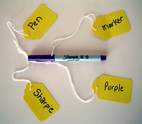Waar de toepassing van SKOS gebruikelijk is voor het definieren van begrippen, is het gebruik van OWL gebruikelijk bij het maken van een instantieerbare ontologie.
3.4.5 Grafische representatie
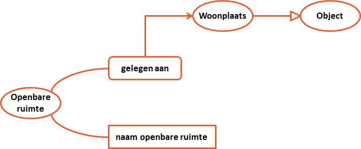Voor elke owl:Class wordt een elipse gebruikt. Voor elk owl:DatatypeProperty wordt een rechthoek gebruikt. Voor elk owl:ObjectProperty wordt een rechthoek met afgevlakte hoeken gebruikt. In bovenstaand voorbeeld is bovendien een kleurstelling gebruikt. Deze is vrij te kiezen.
Alle pijlen in het model hebben een richting:
- De vaste pijl met open pijlpunt geeft een
rdfs:subClassOfrelatie aan - De gebogen lijn zonder pijlpunt geeft aan dat het
rdfs:domeinvan het betreffendeowl:DatatypePropertyofowl:ObjectPropertygelijk is aan deowl:Classwaar de lijn uitkomt - De vaste pijl vanuit een een
owl:ObjectPropertyverbindt deze met eenowl:Class(derdfs:range)
Merk op dat het niet verplicht is dat een owl:objectProperty en een owl:DatatypeProperty een rdfs:range of rdfs:domein hebben. Zij kunnen dus ook los op zichzelf, of (bij objectproperties) slecht aan 1 kant verbonden zijn met een ander element
3.4.6 Voorbeeld
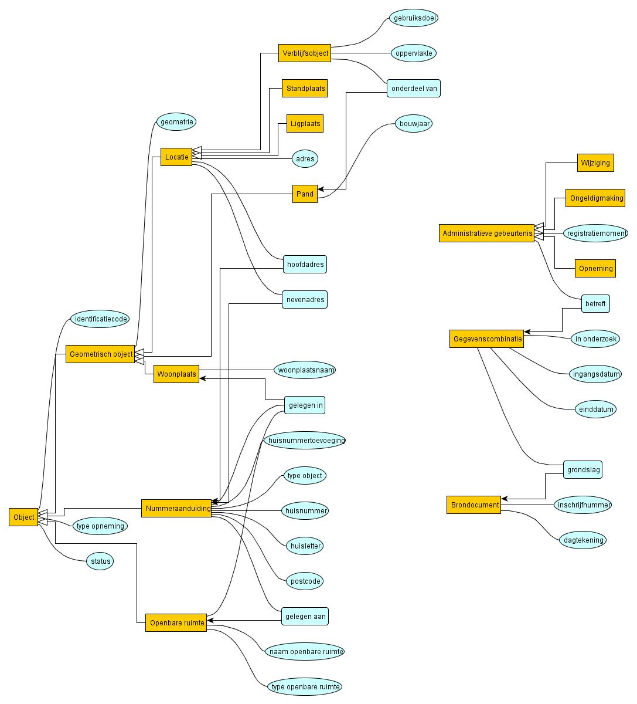Een op deze manier uitgewerkt voorbeeld van het model van de BAG is te vinden op
http://bag.kadaster.nl/def/ontologie#AdresseerbaarObject
. Dit voorbeeld is beschikbaar als html webpagina, in turtle en als grafische representatie.
4 Werkwijze
De werkwijze bij BP4MC2 bestaat grofweg uit vier fasen:
Voor elk begrip is het mogelijk dat deze zich in een andere fase bevindt. Wel is het gebruikelijk dat de fasen inventarisatie en analyse voor alle begrippen in een domein gelijktijdig wordt uitgevoerd. In het geval van een basisregistratie is het doel het inzichtelijk maken van de inhoud en de werking van een basisregistratie, inclusief de rationale daarachter. Omdat basisregistraties wettelijk zijn vastgelegd is deze rationale in de regel juridisch.
4.1 Toepassen URI strategie
4.1.1 Bepalen domeinnaam
De eerste stap is het bepalen van een domeinnaam waarbinnen de data van een registratie worden gepubliceerd. De uitgangspunten en aanbevelingen voor een domeinnaam zijn in paragraaf 4.1 beschreven, maar de praktijk is soms weerbarstiger.
Op basis van de uitgangspunten en aanbevelingen ligt voor de BAG een domein http://bag.nl voor de hand of http://bag.basisregistratie.nl. De meeste drieletterige domeinnamen die beginnen met een ‘b’ blijken in Nederland echter geregistreerd bij bureaus die allerlei diensten verlenen, meestal op het gebied van financiële advisering of kredietbemiddeling. Ook de domeinnamen ‘basisregistratie.nl’ is al geregistreerd door een dienstverlenend bedrijf.
In deze jungle van domeinnamen is het eigenlijk onmogelijk zomaar een domeinnaam te introduceren die het vertrouwen geeft dat deze de bron is van een authentieke registratie. De enige manier is het vastleggen van de domeinnaam die de authentieke bron representeert in de wet. Een voorbeeld is https://www.officielebekendmakingen.nl, waar alle officiële bekendmakingen van de overheid worden gepubliceerd. Deze domeinnaam is vastgelegd in artikel 1 van de bekendmakingsregeling.
Voor de BAG is, in afwachting van een wetsaanpassing waarin een domeinnaam voor publicatie van de authentieke data wordt vastgesteld, gekozen voor een voorlopige tussenoplossing. In de wet ‘Basisregistraties adressen en gebouwen’ staat in Hoofstuk 4, artikel 26: ‘De Dienst (i.c. het Kadaster) houdt een geautomatiseerde landelijke voorziening waarin de data uit de in de gemeenten gehouden adressenregistraties en de gebouwenregistraties zijn opgenomen.’ Daarom lijkt http://bag.kadaster.nl op dit moment de meest bruikbare domeinnaam waaraan zichtbaar is dat het om de authentieke data uit de landelijke voorziening voor de BAG gaat.
4.1.2 type, concept en referentie toegepast op het begrippenkader
Alle in het begrippenkader gedefinieerde begrippen zijn ook concepten. Conform de uri-strategie krijgt ieder begrip een id en wordt de documentatie over een begrip via een 303-redirect gepresenteerd in een doc.
- Zo krijgt het begrip ‘nummeraanduiding’ in de BAG de URI http://bag.kadaster.nl/id/begrip/Nummeraanduiding. Dit is de identificatie (type=id) van het begrip (concept) dat wordt aangeduid met de term Nummeraanduiding (referentie).
- Als deze uri als http-vraag wordt ingetoetst in de browser wordt de documentatie over het begrip dat wordt aangeduid met de term Nummeraanduiding gepresenteerd in een html pagina met als uri http://bag.kadaster.nl/doc/begrip/Nummeraanduiding.
- De documentatie over een bepaald begrip kan in de loop der tijd wijzigen. Daarom is het ook mogelijk om een jaar, maand en dag toe te voegen aan de referentie om de documentatie op een specifiek tijdstip op te vragen. Dit kan via uri http://bag.kadaster.nl/doc/2014/04/01/begrip/Nummeraanduiding.
4.1.3 type, concept en referentie toegepast op het datamodel
In de uri-strategie wordt aanbevolen data te definiëren met het uri-type def.
- Zo krijgt het gegevenselement ‘nummeraanduiding in de BAG de URI http://bag.kadaster.nl/def/gegevenselement/Nummeraanduiding#. Dit is de definitie (type=def) van het gegevenselement dat verwijst naar de data die opgeslagen is bij klassen aangeduid met de term Nummeraanduiding (referentie).
- Als deze uri als http-vraag wordt ingetoetst in de browser wordt de documentatie en metadata over het data-element OpenbareRuimte gepresenteerd in een html pagina met als uri http://bag.kadaster.nl/def/gegevenselement/Nummeraanduiding.
- De documentatie over een bepaald begrip kan in de loop der tijd wijzigen. Daarom is het ook mogelijk om een jaar, maand en dag toe te voegen aan de referentie om de documentatie op een specifiek tijdstip op te vragen. Dit kan via uri http://bag.kadaster.nl/def/2014/04/01/gegevenselement/Nummeraanduiding.
4.1.4 type, concept en referentie toegepast op de data
In de uri-strategie wordt aanbevolen data te definiëren met het uri-type id.
- Zo krijgt het de woonplaats "Amersfoort" in de BAG de URI
http://bag.kadaster.nl/id/woonplaats/1664. Dit is de identificatie (type=id) van de woonplaats die in de BAG de identificatie "1664" heeft. - Als deze URI als http-vraag wordt ingetoetst in de browser wordt de documentatie en metadata over de gegevens van Amersfoort gepresenteerd in een html pagina met als uri http://bag.kadaster.nl/doc/woonplaats/1664.
- De gegevens over een bepaalde woonplaats kunnen in de loop der tijd wijzigen. Daarom is het ook mogelijk om een jaar, maand en dag toe te voegen aan de referentie om de documentatie op een specifiek tijdstip op te vragen. Dit via uri http://bag.kadaster.nl/doc/2014/04/01/woonplaats/1664.
4.1.5 Ontwerpoverwegingen
De volgende best-practices gelden voor het formuleren van de URI:
- Voor begrippen is de identificatie gelijk aan de term van het begrip. We stellen voor om deze te laten beginnen met een hoofdletter, gevolgt door kleine letters. Spaties worden vervangen door CamelCase. Diacrieten en specifieke verboden leestekens (zoals "#" en "&") worden verwijderd.
- Voor klassen en eigenschappen geldt hetzelfde, waarbij een klasse begint met een hoofdletter en een eigenschap met een kleine letter
- Voor begrippen is het handig om als
{concept}te kiezen voor "begrip" of het engelse "concept" - Voor entiteit-attribuut modellen is het handig om als
{concept}te kiezen voor "element" - Voor klasse-eigenschap modellen is het handig om als
{concept}te kiezen voor "ontologie" of het engelse "ontology" - Voor entiteit-attribuut modellen is het handig om voor de "#" de klassenaam te plaatsen en achter de "#" het attribuut (of relatie)
- Voor klasse-entiteit modellen is het handig om zowel de klasse als de entiteit achter de "#" te plaatsen
De volgende best-practices gelden voor de redirect:
- Maak gebruik van 303-redirect met id en doc URI's
- De redirect kan gaan naar de meest actuele versie (een "doc" URI zonder een datum of tijdnotatie), dan wel naar een specifieke versie
- De datum en/of tijdnotatie in de URL behoord te verwijzen naar een pijldatum. De gegevens die worden teruggegeven zouden niet meer mogelijk wijzigen, ook als op een later moment opnieuw dezelfde vraag wordt gesteld.
- Aanvullende contextuele vragen horen geen URI's te zijn volgende de URI-strategie, maar URI-Vragen (dus met een "?")
4.2 Inventariseren en analyseren van de samenhang
4.2.1 Bepalen basis set te definiëren begrippen
De meeste basisregistraties kennen een informatiemodel. Daarin worden alle objecten, attributen en relaties uit het informatiemodel benoemd. Voor de BAG is hiertoe bijvoorbeeld de documentatie van het InformatieModel BAG (IMBAG) gebruikt. Daarbij komen de begrippen in de waardelijsten. Juridisch gezien is de betekenis van al deze subtypes ook van belang. Deze begrippen worden daarom aan de lijst met te definiëren begrippen toegevoegd.
Van elke term wordt een begrip gemaakt. Ook wordt gefilterd op homoniemen en synoniemen. Omdat vanuit het UML model ook al veel relaties bekend zijn, kunnen de begrippen meteen al aan elkaar worden gerelateerd. De relaties uit het UML model worden daarvoor vertaald naar de relaties in het BP4MC2 metamodel.
- Subtypen uit het informatiemodel en uit waardelijsten worden vertaald naar de taxonomische relatie ‘is subtype van’.
- Relaties uit het informatiemodel worden vertaald naar de taxonomische relatie ‘is gerelateerd aan’.
- Sommige attributen worden na handmatige analyse vertaald naar de taxonomische relatie ‘is onderdeel van’.
- De overige attributen worden vertaald naar de taxonomische relatie ‘is eigenschap van’.
Op deze wijze ontstaat een eerste versie van een semantisch netwerk in de vorm van een axiomatisch begrippenkader van het domein.
N.B. Waardelijsten zijn in het informatiemodel ‘gewoon’ lijstjes met omschrijvingen. In het semantisch model krijgen deze begrippen expliciet een plaats op basis van hun juridische betekenis. Daarmee ontstaat meteen een mechanisme om dit soort begrippen te beheren.
Deze werkwijze vanuit de registratie werkt in de praktijk aanzienlijk efficiënter dan de vaak gevolgde omgekeerde weg. Dan wordt de relevante wetgeving pagina voor pagina, zin voor zin semantisch ontleed. Zelfstandige naamwoorden zijn kandidaat begrippen, sommige werkwoorden duiden op gebeurtenissen en sommige werkwoorden in combinatie met termen als 'moeten'. 'mogen' en 'zullen' duiden op regels, die in BP4MC2 worden geduid in situaties. Voor zo'n proces is gedetailleerde en specialistische juridische kennis nodig om discussies te kunnen voeren over wat de wet nu precies bedoelt, wat in de praktijk wel of niet relevant is en hoe een en ander vertaald moet worden naar de registratie. Het simpelweg als uitgangspunt nemen van de praktijk, ofwel de registratie omzeilt al dit soort discussie en maakt het mogelijk begrippen gewoon op te zoeken en te valideren in de wet. In de praktijk blijkt dit voor het gros van de begrippen goed te doen voor iemand met een HBO/juridische achtergrond die een beetje de weg weet in wetgeving.
4.2.2 Bepalen basis set te definiëren gebeurtenissen
Voor het vaststellen van juridisch relevante gebeurtenissen binnen het domein wordt de volgende werkwijze gehanteerd:
- Alle ‘objectiveerbare’ elementen uit het informatiemodel kunnen, net als de begrippen die als typeringen (type, soort, aard) voorkomen in waardelijsten kunnen een eigen levenscyclus hebben. Dat wil zeggen dat ze op enig moment op enige manier ontstaan, misschien nog een keer wijzigen en misschien kunnen verdwijnen. Een voorbeeld is de status van een pand in de BAG. Deze kan wijzigen van ‘in aanbouw’ naar ‘bebouwd’ naar ‘gesloopt’.
- Sommige begrippen kunnen worden gegroepeerd. In de bijvoorbeeld de Kadastrale registratie blijkt dat een aantal typen zakelijke rechten dezelfde levenscyclus hebben. Ze kunnen worden gevestigd, overgedragen en tenietgaan. Door deze te groeperen als 'overdraagbare zakelijke rechten' kan iedere gebeurtenis steeds voor deze groep als geheel worden vastgesteld.
- Dit is conform de opbouw van de wet. Zo kent het Burgerlijk Wetboek een hoofdstuk 'zakelijke rechten', waarin onder andere wordt gedefinieerd wat daarmee wordt bedoeld en hoe en onder welke condities ze kunnen worden gevestigd, overgedragen of tenietgaan. Het is een beetje een kwestie van stijl wat wordt gedefinieerd in het axiomatisch begrippenkader en wat wordt gedefinieerd in regels. Zo kan eigendom, opstal en erfpacht op een hoop worden gegooid en in regels worden aangeven dat opstal en erfpacht alleen kunnen worden gevestigd op het eigendom en opstal ook nog op erfpacht. Dit kan ook worden uit gemodelleerd in gedetailleerde gebeurtenissen zoals 'vestiging 'erfpacht', 'vestiging opstal op eigendom' en 'vestiging opstal op erfpacht', et cetera. Om een registratie voor afnemers van data een beetje doorzichtig te houden is het handig de granulariteit van gebeurtenissen zo te kiezen dat er maximaal 50 tot 100 gebeurtenissen ontstaan.
4.2.3 Toevoegen context
Iedere gebeurtenis vindt plaats in een bepaalde context:
- Er is altijd een aanleiding in de "brute werkelijkheid".
- Er zijn altijd een of meerdere voorwaarden waaronder de gebeurtenis leidt tot het gewenste resultaat.
- De gebeurtenis resulteert in een nieuwe (eind)situatie in de 'brute werkelijkheid'.
4.3 Redigeren, valideren en verifiëren
4.3.1 Redigeren: definieren en documenteren begrippen en gebeurtenissen
Als het raamwerk in de vorm van een axiomatisch stelsel van begrippen en gebeurtenissen door een semantic web specialist is ingericht (en al vast is ingevuld met voorlopige definities uit bestaande glossaria) kan dit in een relatief strak proces worden ingevuld.
Per begrip en gebeurtenis worden de definitie en overige documentatie worden geredigeerd door een juridisch medewerker met een HBO/juridische achtergrond die een beetje de weg weet in wetgeving.
4.3.2 Valideren
De ingevulde raamwerken worden gevalideerd door een daartoe geautoriseerde medewerker die is gemandateerd door de domeineigenaar. Meestal is dit een beleidsverantwoordelijke jurist. Als de invulling niet voldoet, dan wordt deze aangepast door de beleidsverantwoordelijke zelf, of door c.q. in samenwerking met de juridisch medewerker.
4.3.3 Verifiëren
Het ingevulde raamwerk moet niet alleen juridisch juist zijn, maar het moet ook passen in de overige raamwerken en in lijn zijn met de regels die gelden voor BP4MC2. Dit wordt uitgevoerd door een medewerker met specifieke kennis op het gebied van kennistechnologie en semantiek.
4.4 Publiceren
In principe wordt het semantisch raamwerk gepubliceerd met geverifieerde begrippen. Het is echter ook mogelijk begrippen met de status 'gevalideerd' en/of 'ter validatie' al vast te publiceren. De begrippen, gebeurtenissen en situaties worden opgeslagen in rdf/owl. Dat maakt het mogelijk om ze, afhankelijk van het doel, te representeren in een uitgebreide woordenlijst, als semantisch netwerk (al dan niet grafisch), taxonomie, semantische wiki of wat dan ook.
4.5 Definieren datamodel
4.5.1 Beschrijven van een relationeel datamodel
Door eerst een begrippenkader te definiëren en daarna het datamodel te beschrijven kan het datamodel ook echt worden beschreven als wat het is. Een datamodel is een beschrijving van een structuur waarin data kunnen worden opgeslagen, die betrekking hebben op een identificeerbaar object in de brute werkelijkheid, waarvan het type wordt aangeduid met een in het sociaal/juridische begrippenkader gedefinieerd begrip.
Omdat alle begrippen om pragmatische redenen al waren afgeleid van het datamodel is de relatie tussen een data-element waarin informatie wordt opgeslagen over een object van het type dat wordt aangeduid met een bepaald begrip en dat begrip bekend.
Definities van data-objecten krijgen dan de volgende vorm:
- Het datatype OpenbareRuimte bevat de data over het objecten die worden aangeduid met het begrip OpenbareRuimte.
Soms worden begrippen in een datamodel op een hoop gegooid en gegeneraliseerd. Dat leidt tot een definitie als:
- Het datatype AdresseerbaarObject is een generalisatie van de datatype Verblijfsobject, Ligplaats en Standplaats.
Het begrip ‘adresseerbaar object’ komt in de wet niet voor, maar is in het datamodel opgevoerd als hulpmiddel om aan zowel verblijfsobjecten, ligplaatsen en standplaatsen een adres te kunnen toekennen, het is een zogenaamd ‘abstract datatype’, dat niet zichtbaar is in de brute werkelijkheid in de juridische werkelijkheid.
Een laatste categorie zijn begrippen die juridisch allemaal hun eigen betekenis hebben, maar in het datamodel op een hoop worden gegooid. Dit komt vooral voor in meer ingewikkelde registraties die al wat een langere geschiedenis hebben. Een voorbeeld zijn de rechten die worden vastgelegd in de BRK:
- Het datatype ZakelijkRecht bevat de data over het objecten die worden aangeduid met de begrippen Eigendom, Opstal, Erfpacht, Vruchtgebruik, …
4.5.2 Beschrijven van een ontologie
Voor de BAG is ook een vertaling gemaakt van het begrippenmodel naar een ontologie die hier direct op aansluit. Daarbij wordt de relatie tussen klassen en begrippen 1 op 1. Definities zien er dan uit als:
- De klasse OpenbareRuimte bevat de data over de objecten die worden aangeduid met het begrip OpenbareRuimte.
In deze implementatie zijn een aantal ontwerpkeuzes gemaakt:
- Gebeurtenissen worden apart uitgemodelleerd.
- Tijd en plaats – graph properties
- Provenance data
Traditioneel wordt data beschermd door een applicatie: de software “bovenop” de database. Deze applicatie zorgt voor transactionele integriteit, maar ook toegang, “betekenis” van de data, etc, etc.
Traditionele data is geissoleerd: het is moeilijk voor anderen te gebruiken, aangezien je steeds “door” of “langs” de applicatie moet.
Linked data kent deze beschermmuur niet. Dat heeft voordelen (je kunt er makkelijk bij), maar ook nadelen (er is geen duidelijk toegangspoort, vgl de problemen die dimitri ervaart, etc, etc). Maar belangrijker: er is geen beschermer meer van de integriteit.
Integriteit van data in Linked Data termen betekent integriteit van de context van de data. Dwz: van elke triple is duidelijk wat de context is, en deze context is voldoende te begrijpen. Context is in deze: herkomst, betekenis, etc, etc, etc.
5 Ondersteuning
5.1 Architectuur
Onderstaand figuur geeft een overzicht van de architectuur:
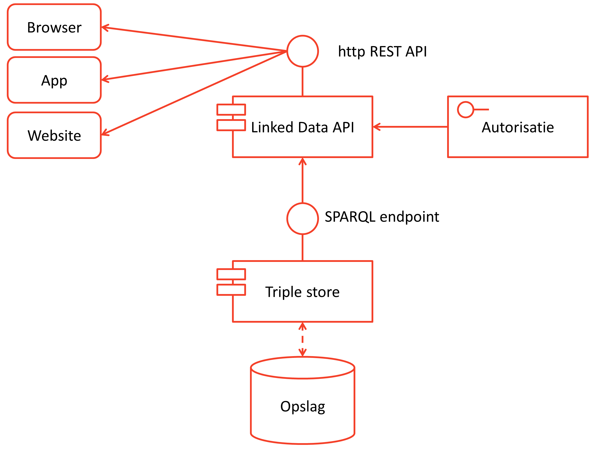5.1.1 Triple store
De basis voor de opslag van linked data is een triple store. Een triple store is een database die specifiek is ingericht op het efficiënt opslaan en ontsluiten van data die als triples zijn geordend. De meeste triple stores zijn tegenwoordig eigenlijk een quad store. Een quad store is een triple store die het mogelijk maakt om ook de ‘context’, de graph op te slaan. Aan iedere triple wordt de graph als context toegevoegd, waardoor een quad (graph – subject – predicate - object) ontstaat.
5.1.2 SPARQL endpoint
Standaard kent een triple store de mogelijkheid om via een SPARQL endpoint data op te vragen uit deze store. SPARQL (SPARQL Protocol and RDF Query Language) is een door de W3C gedefinieerde zoektaal die gebruikt wordt om een triple store te bevragen via zoekopdrachten. Dit gebeurt met een standaard protocol op basis van een zogenaamde http RESTful service [GRAPHSTORE][SPARQL11].
In het voorbeeld van de BAG kan aan een SPARQL endpoint bijvoorbeeld de volgende vraag worden gesteld. Deze vraagt de gegevens op van het pand aan de Krankeledenstraaat 40 in Amersfoort:
select ?pand ?eigenschap ?waarde
where {
?openbareRuimte bag:naamOpenbareRuimte "Krankeledenstraat”.
?nummeraanduiding bag:gerelateerdeOpenbareRuimte ?openbareRuimte.
?nummeraanduiding bag:huisnummer "30".
?verblijfsobject bag:hoofdadres ?nummeraanduiding.
?verblijfsobject bag:onderdeelVan ?pand.
?pand ?eigenschap ?waarde.
}
Om zo’n vraag te kunnen stellen is toch wel wat gespecialiseerde SPARQL kennis nodig. Deze vraag levert ook een antwoord op dat een standaard SPARQL vorm heeft. Dit is niet de meest praktische vorm. Daarom is er een linked data API (application programming interface). Dit is een verzameling definities op basis waarvan een computerprogramma kan communiceren met de triple store.
5.1.3 Linked Data API
De linked data API is een voorziening die het mogelijk maakt om antwoord te geven op URL's en URL-Vragen naar Linked Data. Zo kun je direct in de brouwser de volgende relatief eenvoudige URL-vraag stellen:
Als deze vraag wordt gesteld vanuit de browser herkent de API dat en toont deze als antwoord een nette, in de gewenste huisstijl van de organisatie opgemaakte webpagina.
Het is ook mogelijk om een voor programmeurs aantrekkelijk protocol te gebruiken, namelijk RESTful services [REST] die JSON [JSON] retourneren. Daardoor hebben programmeurs niet (veel) kennis nodig van linked data om een app of programma maken waarin linked data wordt gebruikt.
De API biedt bovendien de mogelijkheid om autorisatie toe te passen op de getoonde informatie, zodat alleen geautoriseerde personen toegang hebben tot de gegevens. Dan zijn het niet meer open data, maar moet er bijvoorbeeld voor worden betaald of zijn bepaalde data niet voor iedereen toegangkelijk.
De Linked Data API kent als interface een "normaal" http endpoint. Dat betekent dat http GET requests afgehandeld worden door de Linked Data API. Voor de specificaties van de Linked Data API bestaan op dit moment twee varianten:
- De vrij generieke en vanuit de W3C opgestelde Linked Data Platform (LDP) [LDP];
- De meer specifieke en op implementatie gerichte Linked Data API specificatie [LDAPI].
Door het aanbieden van een Linked Data API kunnen verschillende systemen aansluiten op de Linked Data API:
- Een App, waarbij de App via een RESTful JSON http service gegevens opvraagd van de Linked Data API;
- Een website, waarbij http links zijn opgenomen. Door te klikken op de website, navigeer je naar een website van de Linked Data API zelf, en zal in de browser van de gebruiker de Linked Data als een html webpagina worden getoond;
- Een informatiesysteem, waarbij een machine-naar-machine interface is geimplementeerd door middel van een RESTful http webservice. Daarmee biedt deze architectuur de mogelijkheid om opgenomen te worden in een SOA landschap (maar dan niet met een SOAP webservice [SOAP], maar een RESTful webservice).
- Een interactieve website, waarbij via Javascript Ajax-calls [AJAX] worden uitgevoerd, zodat de inhoud van het scherm dynamisch kan worden bijgewerkt, bijvoorbeeld voor het tonen van een grafische representatie, zie ook verderop in dit hoofdstuk.
Het bepalen van de vorm waarin het resultaat wordt teruggegeven gebeurt via ‘content negotiation’.
5.1.4 Content negotiation
Het http protocol kent de mogelijkheid van "content negotiation". Dit betekent dat op basis van de http-request header, de http server een andere "vorm" van de webpagina zal teruggeven.
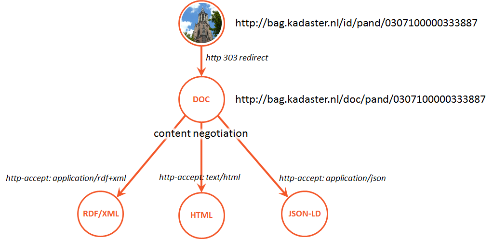In bovenstaand plaatje is dit uitgebeeld. De URL http://bag.kadaster.nl/doc/pand/0307100000333887 kan hier op drie verschillende manieren worden weergegeven:
- Als "gewone" webpagina (html), voor menselijke gebruikers. Het intypen van de URL in een browser zal normaal gesproken dit gedrag vertonen
- Als JSON-LD document, voor App bouwers die van JSON services houden (de meeste programmeurs);
- Als RDF/XML document, voor de meer hard-core Linked Data specialisten.
Overigens is het gebruikelijk om ook specifiek (los van de http-request header) een formaat op te vragen, door achter de URL een extensie toe te voegen die het formaat weergeeft. Zo geeft onderstaande URL-vraag een JSON response terug.
Bovenstaand figuur laat ook het http-303 redirect gedrag zien. Op grond van de richtlijnen uit de URI strategie zal de "id" URL leiden tot een http-303 redirect response. Dit leidt ertoe dat de browser opnieuw een pagina zal opvragen, in dit geval de "doc" URL.
5.1.3 Linked Data grafische representatie
Linked Data leent zich erg goed voor het grafisch representeren van data. Het generieke datamodel voor Linked Data is feitelijk een gelabelde gerichte graaf [GRAPH]. Door gebruik te maken van een standaard Javascript library (D3.js), is het vrij eenvoudig om een dergelijk graaf zichtbaar te maken. Een dergelijk voorbeeld is gepresenteerd in sectie 5.2.
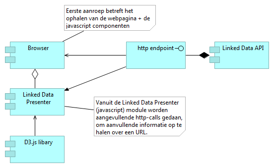5.1.4 Infrastructuur
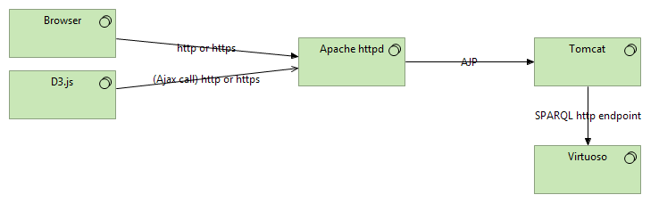TODO